Chapter 3 Model
3.1 Scraping Game Data
3.1.1 Libraries
#load libraries#
library(tidyverse)
library(rvest)
library(janitor)
library(runner)
library(lubridate)
library(magrittr)3.1.2 Season Gamelogs
Here, I create a dataframe for each season from 2014/15 to 2018/19 (named 2015:2019 respectively), each of which contains every regular season game for that year. Each row is one game. These years were selected because they were “normal”, aka 1230 total games without bubbles, wildcats, etc. The source data is basketball-reference.com.
Create a reference table of team names and abbreviations
#load teams and put into teams_df#
teams_full <- c("Atlanta Hawks", "Boston Celtics", "Brooklyn Nets", "Charlotte Hornets", "Chicago Bulls", "Cleveland Cavaliers", "Dallas Mavericks", "Denver Nuggets", "Detroit Pistons", "Golden State Warriors", "Houston Rockets", "Indiana Pacers", "Los Angeles Clippers", "Los Angeles Lakers", "Memphis Grizzlies", "Miami Heat", "Milwaukee Bucks", "Minnesota Timberwolves", "New Orleans Pelicans", "New York Knicks", "Oklahoma City Thunder", "Orlando Magic", "Philadelphia 76ers", "Phoenix Suns", "Portland Trail Blazers", "Sacramento Kings", "San Antonio Spurs", "Toronto Raptors", "Utah Jazz", "Washington Wizards")
teams_abr <- c("ATL", "BOS", "BRK", "CHO", "CHI", "CLE", "DAL", "DEN", "DET", "GSW", "HOU", "IND", "LAC", "LAL", "MEM", "MIA", "MIL", "MIN", "NOP", "NYK", "OKC", "ORL", "PHI", "PHO", "POR", "SAC", "SAS", "TOR", "UTA", "WAS")
conference <- c('East','East','East','East','East','East','West','West','East','West','West','East','West','West','West','East','East','West','West','East','West','East','East','West','West','West','West','East','West','East')
division <- c('Southeast','Atlantic','Atlantic','Southeast','Central','Central','Southwest','Northwest','Central','Pacific','Southwest','Central','Pacific','Pacific','Southwest','Southeast','Central','Northwest','Southwest','Atlantic','Northwest','Southeast','Atlantic','Pacific','Northwest','Pacific','Southwest','Atlantic','Northwest','Southeast')
color1 <- c('#E03A3E','#007A33','#000000','#1D1160','#CE1141','#860038','#00538C','#0E2240','#C8102E','#1D428A','#CE1141','#002D62','#C8102E','#552583','#5D76A9','#98002E','#00471B','#0C2340','#0C2340','#006BB6','#007AC1','#0077C0','#006BB6','#1D1160','#E03A3E','#5A2D81','#C4CED4','#CE1141','#002B5C','#002B5C')
color2 <- c('#C1D32F','#BA9653','#FFFFFF','#00788C','#000000','#041E42','#002B5E','#FEC524','#1D42BA','#FFC72C','#000000','#FDBB30','#1D428A','#FDB927','#12173F','#F9A01B','#EEE1C6','#236192','#C8102E','#F58426','#EF3B24','#C4CED4','#ED174C','#E56020','#000000','#63727A','#000000','#000000','#00471B','#E31837')
color3 <- c('#26282A','#963821','x','#A1A1A4','x','#FDBB30','#B8C4CA','#8B2131','#BEC0C2','x','#C4CED4','#BEC0C2','#BEC0C2','#000000','#F5B112','#000000','#0077C0','#9EA2A2','#85714D','#BEC0C2','#002D62','#000000','#002B5C','#000000','x','#000000','x','#A1A1A4','#F9A01B','#C4CED4')
color4 <- c('x','#FFFFFF','x','x','x','#000000','#000000','#1D428A','#002D62','x','x','x','#000000','x','#707271','x','#000000','#78BE20','x','#000000','#FDBB30','x','#C4CED4','#63727A','x','x','x','#B4975A','x','x')
teams_df <- data.frame(teams_full, teams_abr, conference, division,color1,color2,color3,color4)
rm(teams_full,teams_abr,conference, division,color1,color2,color3,color4)
print(head(teams_df))## teams_full teams_abr conference division color1 color2 color3
## 1 Atlanta Hawks ATL East Southeast #E03A3E #C1D32F #26282A
## 2 Boston Celtics BOS East Atlantic #007A33 #BA9653 #963821
## 3 Brooklyn Nets BRK East Atlantic #000000 #FFFFFF x
## 4 Charlotte Hornets CHO East Southeast #1D1160 #00788C #A1A1A4
## 5 Chicago Bulls CHI East Central #CE1141 #000000 x
## 6 Cleveland Cavaliers CLE East Central #860038 #041E42 #FDBB30
## color4
## 1 x
## 2 #FFFFFF
## 3 x
## 4 x
## 5 x
## 6 #000000Loops for scraping from basketball-reference
#load variables for scrape/looping#
years <- c("2015","2016","2017","2018","2019")
months <- c("october","november","december","january","february","march","april","may","june")
#loop to scrape each full year into its own df#
for(year in years){
gamelog_df <- data.frame()
for(month in months){
url <- paste0("https://www.basketball-reference.com/leagues/NBA_",year,"_games-", month, ".html")
webpage <- read_html(url)
table = webpage %>% html_nodes("table") %>% html_table() %>% .[[1]]
gamelog_df <- rbind(gamelog_df, table)}
assign(paste0("log",year,"df"), gamelog_df)}
rm(gamelog_df, table, webpage,month, months, url, year)Loop to clean up each individual year’s gamelog
#loop to clean up each year's df
for (year in years){
temp_df <- get(paste0("log",year,"df"))
temp_df <- temp_df[1:1230, c(1, 3:6)] %>%
set_colnames(c("date","away_team","away_pts","home_team","home_pts")) %>%
mutate(game_id = as.numeric(year)*100000 + (1:1230),
season = as.numeric(paste0(year)),
date = mdy(date),
away_pts = as.numeric(away_pts),
home_pts = as.numeric(home_pts),
game_outcome = ifelse(home_pts > away_pts,1,0)) %>%
select(game_id,date,season,home_team,away_team,home_pts,away_pts,game_outcome)
assign(paste0("log",year,"df"), temp_df)
}
rm(temp_df, year)> print(head(log2015df))
# A tibble: 6 x 8
game_id date season home_team away_team home_pts away_pts game_outcome
<dbl> <date> <dbl> <chr> <chr> <dbl> <dbl> <dbl>
1 201500001 2014-10-28 2015 New Orleans Pelicans Orlando Magic 101 84 1
2 201500002 2014-10-28 2015 San Antonio Spurs Dallas Mavericks 101 100 1
3 201500003 2014-10-28 2015 Los Angeles Lakers Houston Rockets 90 108 0
4 201500004 2014-10-29 2015 Charlotte Hornets Milwaukee Bucks 108 106 1
5 201500005 2014-10-29 2015 Indiana Pacers Philadelphia 76ers 103 91 1
6 201500006 2014-10-29 2015 Toronto Raptors Atlanta Hawks 109 102 1
> print(tail(log2019df), n=5)
# A tibble: 6 x 8
game_id date season home_team away_team home_pts away_pts game_outcome
<dbl> <date> <dbl> <chr> <chr> <dbl> <dbl> <dbl>
1 201901225 2019-04-10 2019 New York Knicks Detroit Pistons 89 115 0
2 201901226 2019-04-10 2019 Philadelphia 76ers Chicago Bulls 125 109 1
3 201901227 2019-04-10 2019 San Antonio Spurs Dallas Mavericks 105 94 1
4 201901228 2019-04-10 2019 Denver Nuggets Minnesota Timberwolves 99 95 1
5 201901229 2019-04-10 2019 Los Angeles Clippers Utah Jazz 143 137 1EXPECTED ENVIRONMENT:
library(knitr)
knitr::include_graphics('~\\R\\bookdown-demo-main\\bookdown-demo-main\\images\\Model_31_environment.png')
well this doesn’t work (slash make sure this works and if it does save figures to the same place)

a screenshot of the environment
3.1.3 Team Gamelogs
In order to ultimately pull each team’s stats going into each game, I must create a dataframe of each team’s 82-game gamelog for each season - every game in this df is duplicated (once from the perspective of each team playing), so the full df should be double that of the total number of games (1230 g/yr * 5 yrs * 2 = 12300 rows). The source data is again basketball-reference.
This loops gets the gamelog for each team within each year and stitches together at the end (first all the teams into one individual year, then all the years into a df called teamglfull)
for (year in years){
teamyeargl <- data.frame()
for (team in teams_df$teams_abr){
url <- paste0("https://www.basketball-reference.com/teams/",team,"/",year,"/gamelog-advanced")
webpage <- read_html(url)
table2 = webpage %>% html_nodes("table") %>% html_table() %>% .[[1]]
testdf <- table2[2:8]
testdf[1,1] = 'gID'
testdf[1,3] = 'H/A'
testdf[1,6] = 'PTS'
testdf[1,7] = 'oPTS'
test2df <- cbind(testdf, table2[9:18], table2[20:23])
test3df <- table2[25:28] %>% row_to_names(row_number = 1) %>%
rename_with( ~ paste0("o", .x))
test3df <- rbind(names(test3df),test3df)
table2 <- cbind(test2df, test3df) %>% row_to_names(row_number = 1)
rm(testdf,test2df,test3df)
#this is so messy, but may be the only way since there are unnamed columns
table2$gID <- as.numeric(table2$gID)
table2 <- table2 %>% filter(table2$gID > 0) %>%
mutate_at(vars(colnames(table2[-c(2:5)])), as.numeric) %>%
mutate(`H/A` = case_when(`H/A` == '@' ~ 'A', TRUE ~ 'H'))
#cbind all table1, table2, testtable into table 3, assign to team gl df (should be 75 columns, 77 after adding teamname and seasonyear)
table2 <- table2 %>% mutate(Team = team, .before = 1) %>% mutate(Season = year, .after = 1)
teamyeargl <- rbind(teamyeargl,table2)
#assign(paste0(team,year,"gl_df"), table3)
}
assign(paste0("teamgl",year,"_df"), teamyeargl)
rm(table2,webpage,team,url)
}
rm(year,teamyeargl)Combine the individual teamyeargls into one big reference df called teamglfull
#makes a df of teamgamelogs called teamglfull
teamglfull <- rbind(teamgl2015_df,teamgl2016_df,teamgl2017_df,teamgl2018_df,teamgl2019_df)
teamglfull$Date <- as.Date(teamglfull$Date)
rm(teamgl2015_df,teamgl2016_df,teamgl2017_df,teamgl2018_df,teamgl2019_df)> print(head(teamglfull))
# A tibble: 6 x 27
Team Season gID Date `H/A` Opp `W/L` PTS oPTS ORtg DRtg Pace FTr `3PAr` `TS%` `TRB%` `AST%`
<chr> <dbl> <dbl> <date> <chr> <chr> <chr> <dbl> <dbl> <dbl> <dbl> <dbl> <dbl> <dbl> <dbl> <dbl> <dbl>
1 ATL 2015 1 2014-10-29 A TOR L 102 109 109. 117. 93.5 0.213 0.275 0.583 46.7 65
2 ATL 2015 2 2014-11-01 H IND W 102 92 110 99.2 92.7 0.478 0.29 0.611 45.7 74.3
3 ATL 2015 3 2014-11-05 A SAS L 92 94 97.3 99.5 94.5 0.12 0.272 0.475 42.5 68.4
4 ATL 2015 4 2014-11-07 A CHO L 119 122 105. 107. 94.1 0.28 0.355 0.57 42.7 65.1
5 ATL 2015 5 2014-11-08 H NYK W 103 96 116. 108. 88.9 0.444 0.272 0.532 48.2 54.5
6 ATL 2015 6 2014-11-10 A NYK W 91 85 104 97.1 87.5 0.394 0.38 0.546 48.7 74.1
# ... with 10 more variables: `STL%` <dbl>, `BLK%` <dbl>, `eFG%` <dbl>, `TOV%` <dbl>, `ORB%` <dbl>,
# `FT/FGA` <dbl>, `oeFG%` <dbl>, `oTOV%` <dbl>, `oDRB%` <dbl>, `oFT/FGA` <dbl>
> print(tail(teamglfull))
# A tibble: 6 x 27
Team Season gID Date `H/A` Opp `W/L` PTS oPTS ORtg DRtg Pace FTr `3PAr` `TS%` `TRB%` `AST%`
<chr> <dbl> <dbl> <date> <chr> <chr> <chr> <dbl> <dbl> <dbl> <dbl> <dbl> <dbl> <dbl> <dbl> <dbl> <dbl>
1 WAS 2019 77 2019-03-29 A UTA L 124 128 118. 122 105. 0.224 0.378 0.576 48.8 66.7
2 WAS 2019 78 2019-03-31 A DEN W 95 90 95.4 90.4 99.6 0.217 0.261 0.471 48.6 64.9
3 WAS 2019 79 2019-04-03 H CHI L 114 115 106. 107. 108. 0.268 0.278 0.526 44.3 53.3
4 WAS 2019 80 2019-04-05 H SAS L 112 129 119. 137. 94.3 0.25 0.364 0.573 44.7 52.4
5 WAS 2019 81 2019-04-07 A NYK L 110 113 116. 120. 94.5 0.175 0.33 0.496 53.8 55.8
6 WAS 2019 82 2019-04-09 H BOS L 110 116 108. 114. 102. 0.186 0.402 0.524 53.7 68.3
# ... with 10 more variables: `STL%` <dbl>, `BLK%` <dbl>, `eFG%` <dbl>, `TOV%` <dbl>, `ORB%` <dbl>,
# `FT/FGA` <dbl>, `oeFG%` <dbl>, `oTOV%` <dbl>, `oDRB%` <dbl>, `oFT/FGA` <dbl>
> colnames(teamglfull)
[1] "Team" "Season" "gID" "Date" "H/A" "Opp" "W/L" "PTS" "oPTS" "ORtg" "DRtg"
[12] "Pace" "FTr" "3PAr" "TS%" "TRB%" "AST%" "STL%" "BLK%" "eFG%" "TOV%" "ORB%"
[23] "FT/FGA" "oeFG%" "oTOV%" "oDRB%" "oFT/FGA"Expected output: teamglfull (12300 x 27) that has each team’s gamelog sorted by season. If running from the beginning, should now have the logdfs, teamglfull, teams_df, years.
3.2 Base Elo
#download the 538 historical nba elo database from https://data.fivethirtyeight.com/ or https://github.com/fivethirtyeight/data/tree/master/nba-elo, import
nbaallelo538 <- read_csv("~/R/Basketball/bets/excel bet data/nbaallelo538.csv")
View(nbaallelo538)
#pull the elo rating for each team from the 1st game of the 2015 season
check <- nbaallelo538 %>%
filter(year_id == 2015 & seasongame == 1) %>%
select(team_id,elo_i,date_game) %>%
arrange(team_id)
#checking you got all the teams
length(unique(check$team_id))
#make an elo ratings reference with the right names (should this be in teams_df instead of a new table)
team <- teams_df$teams_full
elo_rating <- check$elo_i
game_id <- c(rep(0,30))
date <- mdy(check$date_game)
nba_elo_ratings <- data.frame(team, elo_rating, game_id, date)
rm(team, elo_rating, game_id, date)
rm(check,nbaallelo538)
#set the elo home advantage (fivethirtyeight's is 100)
h_adv <- 100
#functions to define elo calculations
calc_expected_score <- function(team_rating, opp_team_rating) {
return(1 / (1 + 10^((opp_team_rating - team_rating) / 400)))}
calc_new_rating <- function(team_rating, observed_score, expected_score, k_factor) {
return(team_rating + k_factor * (observed_score - expected_score))}
elo_prediction <- function(home_rating, away_rating){
E_home <- 1./(1 + 10 ** ((away_rating - (home_rating+h_adv)) / (400.)))
return(E_home)}
score_prediction <- function(home_rating,away_rating){
xscore <- (home_rating+h_adv - away_rating)/28
return (xscore)}
silverK <- function(MOV, elo_diff){
K_0multi <<- 20
ifelse(MOV>0,
K_0multi <<- 20*((MOV+3)**(0.8)/(7.5+0.006*(elo_diff))),
K_0multi <<- 20*((-MOV+3)**(0.8)/(7.5+0.006*(-elo_diff))))
return(K_0multi)}
for (year in years) {
logdf <- get(paste0("log",year,"df"))
#add new columns for elo ratings to fill
logdf <- logdf %>% mutate(home_elo=0,away_elo=0,
h_w_prob=0,a_w_prob=0,
h_xscorediff=0,a_xscorediff=0)
for (game_i in 1:nrow(logdf)) {
home_team <- logdf$home_team[game_i]
away_team <- logdf$away_team[game_i]
home_win <- logdf$game_outcome[game_i]
game_id <- logdf$game_id[game_i]
home_rating <- nba_elo_ratings %>% filter(team == home_team) %>% pull(elo_rating)
away_rating <- nba_elo_ratings %>% filter(team == away_team) %>% pull(elo_rating)
logdf$home_elo[game_i] = home_rating
logdf$away_elo[game_i] = away_rating
logdf$h_w_prob[game_i] = elo_prediction(home_rating, away_rating)
logdf$a_w_prob[game_i] = 1 - elo_prediction(home_rating, away_rating)
logdf$h_xscorediff[game_i] = score_prediction(home_rating, away_rating)
logdf$a_xscorediff[game_i] = -score_prediction(home_rating, away_rating)
#get new Kfactor
MOV <- logdf$home_pts[game_i] - logdf$away_pts[game_i]
elo_diff <- logdf$home_elo[game_i] - logdf$away_elo[game_i]
K_new <- silverK(MOV, elo_diff)
# Now get their new ratings:
new_home_rating <- calc_new_rating(home_rating, home_win, calc_expected_score(home_rating + h_adv, away_rating), K_new)
new_away_rating <- calc_new_rating(away_rating, 1 - home_win, calc_expected_score(away_rating, home_rating + h_adv), K_new)
# Update elo table with new ratings, game_id, and date:
nba_elo_ratings$elo_rating[nba_elo_ratings$team == home_team] = new_home_rating
nba_elo_ratings$elo_rating[nba_elo_ratings$team == away_team] = new_away_rating
nba_elo_ratings$game_id[nba_elo_ratings$team == home_team] = logdf$game_id[game_i]
nba_elo_ratings$game_id[nba_elo_ratings$team == away_team] = logdf$game_id[game_i]
nba_elo_ratings$date[nba_elo_ratings$team == home_team] = logdf$date[game_i]
nba_elo_ratings$date[nba_elo_ratings$team == away_team] = logdf$date[game_i]
}
#assign logdf to the right year
assign(paste0("log",year,"df"), logdf)
#update nba_elo_ratings table to reflect year-to-year carry-over
nba_elo_ratings <- nba_elo_ratings %>%
mutate(elo_rating = .75*elo_rating + .25*1500)
}
allgames_df <- rbind(log2015df,log2016df,log2017df,log2018df,log2019df)
rm(log2015df,log2016df,log2017df,log2018df,log2019df)
rm(away_rating, away_team, elo_diff, game_i, game_id, home_rating, home_team, home_win, K_0multi, K_new, MOV,logdf)
rm(new_away_rating, new_home_rating, silverK, score_prediction, elo_prediction, calc_new_rating, calc_expected_score)
rm(h_adv, year)Expected output: allgames_df (6150 x 14 with the original 8 plus 2 each for elo, w_prob, xscorediff)
3.3 Verification
The visuals in this section will be used as an initial verification (and ultimately, calibration and comparison) of the elo model. I am using https://www.cawcr.gov.au/projects/verification/#Methods_for_probabilistic_forecasts as a reference and https://projects.fivethirtyeight.com/checking-our-work/ to imitate methods. I will try to work through the most effective visualizations.
3.3.1 Reliability Diagrams
First, I will try to more or less replicate the fivethirtyeight Reliability Diagram
#538 replica
#the main problem here is you don't know how the variance should be calculated
#can you run this in-line?
#these are just so the figures can run in-line
#library(tidyverse)
#allgames_df <-
#nba_elo_ratings <-
allgames_df %>% mutate(bins = cut(h_w_prob,breaks=c(seq(0,1,by=.05)))) %>%
group_by(bins) %>%
summarise(n=n(),
pred_w=mean(h_w_prob),
real_w=mean(game_outcome==1),
var = 1.96*sqrt(pred_w*(1-pred_w)/n),
real_w_max = real_w + var,
real_w_min = real_w - var) %>%
ggplot(aes(x=bins)) +
geom_line(aes(y=pred_w), color='black', size=1, group=1, linetype="dotted") +
geom_point(aes(y=real_w), color='#99CCFF', size=3) +
geom_segment(aes(x=bins, xend=bins, y = pmax(real_w_min,0), yend = pmin(real_w_max,1)),
color='#99CCFF', size=1) +
theme_bw() +
theme(panel.border = element_blank(),
panel.grid.major = element_blank(),
panel.grid.minor = element_blank(),
legend.position = "none",
axis.text.x = element_blank(),
axis.ticks.x = element_blank(),
axis.text.y = element_blank(),
axis.ticks.y = element_blank(),
plot.title = element_text(hjust = 0.5)) +
labs(x="Forecast Home W%", y="Observed Home W%") +
ggtitle("Elo Model Reliability Diagram 538 replica")library(knitr)
knitr::include_graphics('~\\R\\bookdown-demo-main\\bookdown-demo-main\\images\\elo_reliability_1.png')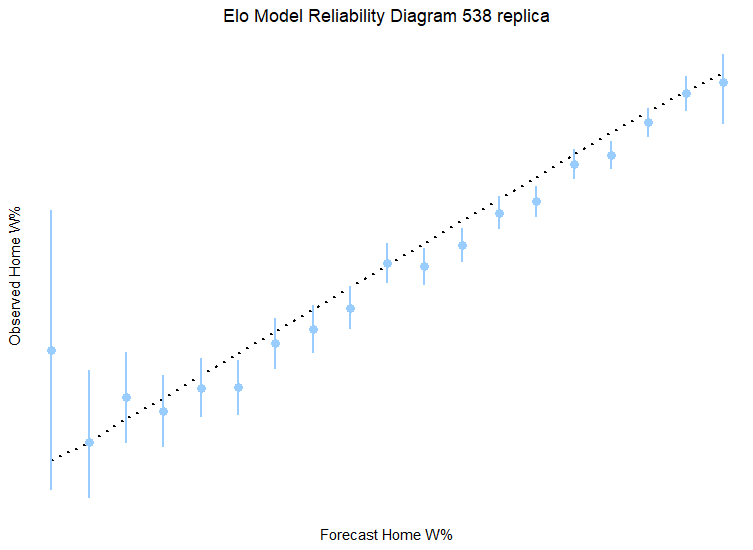
First impressions: 1) The graph is fairly effective although perhaps too much dead space, possibly the width of the chart could be narrowed; 2) The variance is a placeholder because I don’t know how to appropriately calculate the confidence based on n; 3) Could be more effective if there was a ribbon to shade the variances across the x axis; 4) I don’t like the font; 5) The model appears to be overweighting the home advantage, since the forecast home w% is basically always lower than observed.
allgames_df %>% mutate(bins = cut(h_w_prob,breaks=c(seq(0,1,by=.05)))) %>%
group_by(bins) %>%
summarise(n=n(),
pred_w=mean(h_w_prob),
real_w=mean(game_outcome==1),
var = 1.96*sqrt(pred_w*(1-pred_w)/n),
real_w_max = real_w + var,
real_w_min = real_w - var) %>%
ggplot(aes(x=bins)) +
geom_line(aes(y=pred_w), color='black', size=1, group=1, linetype="dotted") +
geom_line(aes(y=real_w, group=1), color='lightblue', size=1) +
geom_ribbon(aes(x=1:length(bins),ymin=real_w_min,ymax=real_w_max), fill = "lightblue", alpha = .3) +
theme_bw() +
theme(panel.border = element_blank(),
panel.grid.major = element_blank(),
panel.grid.minor = element_blank(),
legend.position = "none",
axis.text.x = element_blank(),
axis.ticks.x = element_blank(),
axis.text.y = element_blank(),
axis.ticks.y = element_blank(),
plot.title = element_text(hjust = 0.5)) +
labs(x="Forecast Home W%", y="Observed Home W%") +
ggtitle("Elo Model Reliability Diagram 538 replica with shading")library(knitr)
knitr::include_graphics('~\\R\\bookdown-demo-main\\bookdown-demo-main\\images\\elo_reliability_2.png')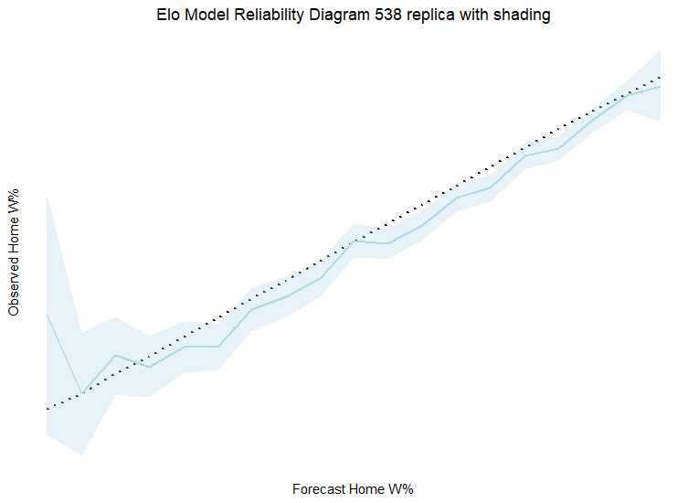
With the correct variance (so displaying n of each bin appropriately), this is probably the right chart, though you will need a more effective way of comparing multiple ribbons. I’m not sure I love the color. Below is a distribution of the bin n’s:
allgames_df %>% mutate(bins = cut(h_w_prob,breaks=c(seq(0,1,by=.05)))) %>%
group_by(bins) %>%
summarise(n=n(),
pred_w=mean(h_w_prob),
real_w=mean(game_outcome==1)) %>%
ggplot(aes(x=bins)) +
geom_col(aes(x=bins,y=n), fill='black', width=.6) +
theme_bw() +
theme(panel.border = element_blank(),
panel.grid.major = element_blank(),
panel.grid.minor = element_blank(),
legend.position = "none",
axis.text.x = element_blank(),
axis.ticks.x = element_blank(),
axis.text.y = element_blank(),
axis.ticks.y = element_blank(),
plot.title = element_text(hjust = 0.5))+
labs(x="Forecast Home W% 5% bins", y="Sample Size #") +
ggtitle("Sample size distribution of forecast bins")library(knitr)
knitr::include_graphics('~\\R\\bookdown-demo-main\\bookdown-demo-main\\images\\elo_bin_n_distribution.png')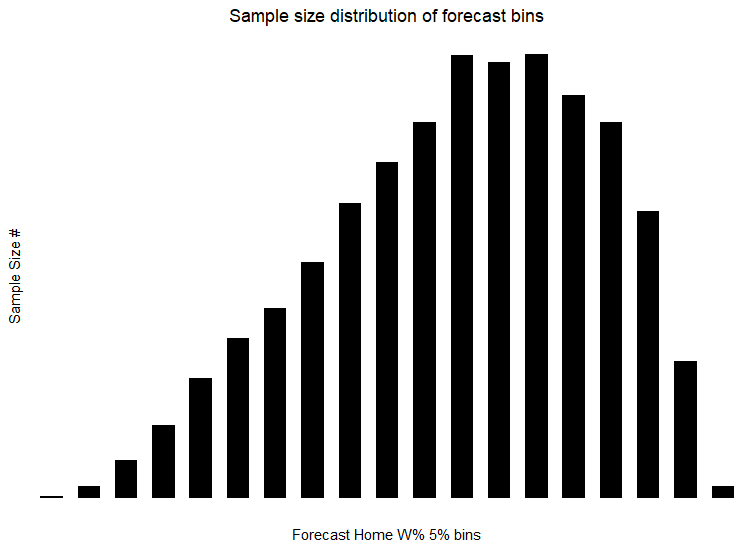
Other charts:
allgames_df %>% mutate(bins = cut(h_w_prob,breaks=c(seq(0,1,by=.05)))) %>%
group_by(bins) %>%
summarise(n=n(),
pred_w=mean(h_w_prob),
real_w=mean(game_outcome==1)) %>%
ggplot(aes(x=bins)) +
geom_line(aes(y=pred_w), color='black', size=1, group=1, linetype="dotted") +
geom_line(aes(y=real_w), color='lightblue', size=1, group=1) +
geom_point(aes(y=real_w), color='lightblue',size=2,group=1) +
theme_bw() +
theme(panel.border = element_blank(),
panel.grid.major = element_blank(),
panel.grid.minor = element_blank(),
legend.position = "none",
axis.text.x = element_blank(),
axis.ticks.x = element_blank(),
axis.text.y = element_blank(),
axis.ticks.y = element_blank(),
plot.title = element_text(hjust = 0.5)) +
labs(x="Forecast Home W%", y="Observed Home W%") +
ggtitle("Elo Model Reliability Diagram")library(knitr)
knitr::include_graphics('~\\R\\bookdown-demo-main\\bookdown-demo-main\\images\\elo_reliability_3.png')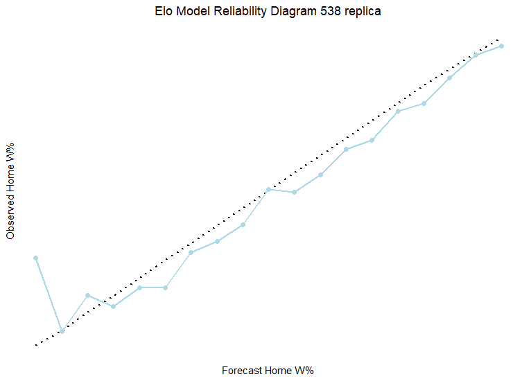
allgames_df %>% mutate(bins = cut(h_w_prob,breaks=c(seq(0,1,by=.05)))) %>%
group_by(bins) %>%
summarise(n=n(),
pred_w=mean(h_w_prob),
real_w=mean(game_outcome==1),
var = 1.96*sqrt(real_w*(1-real_w)/n),
real_w_max = real_w + var,
real_w_min = real_w - var) %>%
ggplot(aes(x=bins)) +
geom_line(aes(y=pred_w), color="grey70", size=1, group=1) +
geom_line(aes(y=real_w), color='black', size=1, group=1) +
geom_ribbon(aes(x=1:length(bins),ymin=real_w,ymax=pred_w),fill = "grey70") +
scale_color_gradient(low="black",high="white") +
theme(panel.border = element_blank(),
panel.grid.major = element_blank(),
panel.grid.minor = element_blank(),
legend.position = "none",
axis.text.x = element_blank(),
axis.ticks.x = element_blank(),
axis.text.y = element_blank(),
axis.ticks.y = element_blank(),
plot.title = element_text(hjust = 0.5)) +
labs(x="predicted Pr(W)", y="Pr(W)") +
ggtitle("Elo model calibration")library(knitr)
knitr::include_graphics('~\\R\\bookdown-demo-main\\bookdown-demo-main\\images\\elo_reliability_4.png')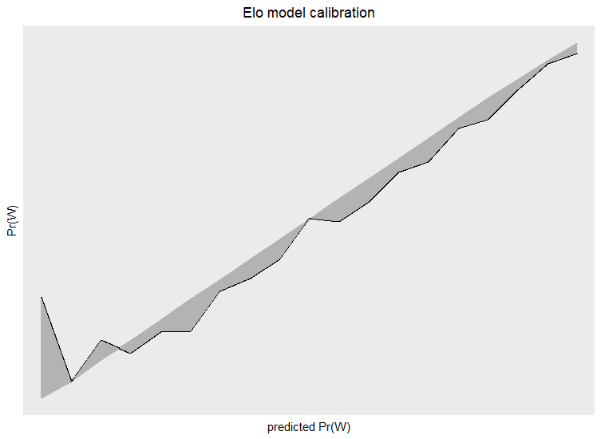
allgames_df %>% mutate(bins = cut(h_w_prob,breaks=c(seq(0,1,by=.05)))) %>%
group_by(bins) %>%
summarise(n=n(),
pred_w=mean(h_w_prob),
real_w=mean(game_outcome==1),
var = 1.96*sqrt(real_w*(1-real_w)/n),
real_w_max = real_w + var,
real_w_min = real_w - var,
diff = abs(pred_w - real_w)) %>%
ggplot(aes(x=bins)) +
geom_line(aes(x=bins,y=pred_w), color="lightgrey", size=1, group=1) +
geom_line(aes(x=bins,y=real_w), color='black', size=.5, group=1) +
geom_ribbon(aes(x=1:length(bins),ymin=ifelse(n<150,pred_w,real_w),ymax=pred_w),alpha=.4) +
geom_ribbon(aes(x=1:length(bins),ymin=ifelse(n<150,real_w,pred_w),ymax=pred_w),alpha=.1) +
theme(panel.border = element_blank(),
panel.grid.major = element_blank(),
panel.grid.minor = element_blank(),
legend.position = "none)",
axis.text.x = element_blank(),
axis.ticks.x = element_blank(),
axis.text.y = element_blank(),
axis.ticks.y = element_blank(),
plot.title = element_text(hjust = 0.5)) +
labs(x="predicted Pr(W)", y="Pr(W)") +
ggtitle("Elo model calibration")library(knitr)
knitr::include_graphics('~\\R\\bookdown-demo-main\\bookdown-demo-main\\images\\elo_reliability_5.png')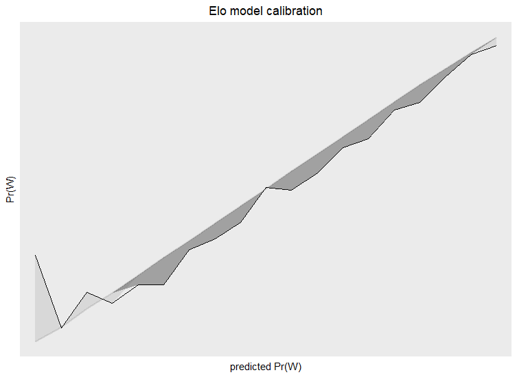
This last one is probably more or less the best one, stylistically. When calibrating you would want to minimize the size of the shaded area, especially the darker area.
3.3.2 Brier Skill Score
library(DescTools)
elo.glm <- glm(as.factor(game_outcome) ~ h_w_prob, data=allgames_df, family=binomial)
summary(elo.glm)
BS <- BrierScore(elo.glm)
print(BS)ref.glm <- glm(as.factor(game_outcome) ~ rnorm(6150,mean=.5,sd=.1), data=allgames_df, family=binomial)
summary(ref.glm)
BSref <- BrierScore(ref.glm)
print(BSref)
BSS <- 1-(BS/BSref)
print(BSS)rm(elo.glm,ref.glm,BS,BSref,BSS)3.3.3 ROC
library(ROCR)
model = glm(as.factor(game_outcome) ~ h_w_prob, data=allgames_df, family = binomial(link="logit"))
pred = predict(model,allgames_df,type='response')
pred = prediction(allgames_df$h_w_prob, as.factor(allgames_df$game_outcome))
perf = performance(pred, "acc")
plot(perf)library(knitr)
knitr::include_graphics('~\\R\\bookdown-demo-main\\bookdown-demo-main\\images\\ROC_1.png')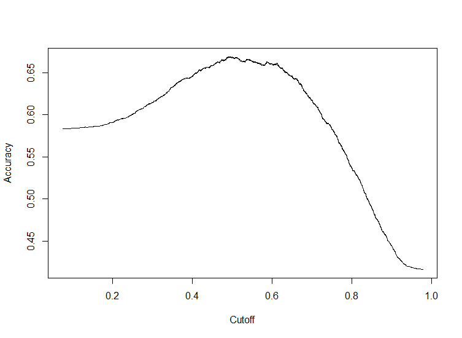
roc = performance(pred,"tpr","fpr")
plot(roc,colorize=T, lwd=2)
abline(a=0,b=1)library(knitr)
knitr::include_graphics('~\\R\\bookdown-demo-main\\bookdown-demo-main\\images\\ROC_2.png')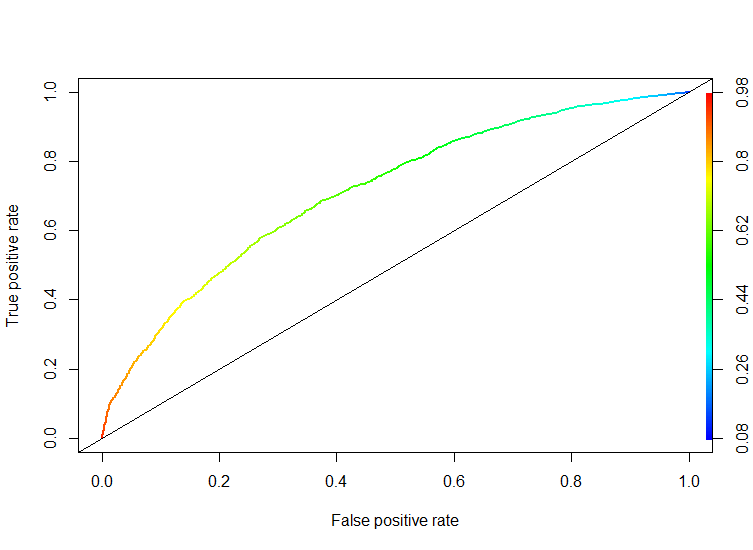
auc = performance(pred, measure = "auc")
print(auc@y.values)
> print(auc@y.values)
[[1]]
[1] 0.7134204rm(auc,elo.glm,model,perf,pred,roc)3.4 Home Advantage Elo Calibration
This whole section needs a lot of work.
I replicated fivethirtyeight’s home elo advantage of 100 points but by inspection it looks high. Here, I will see if I can plot reliability diagram(s) with different home elo advantages.
#read in the singleseason logdfs again
log2015df <- read.csv('~\\R\\Basketball\\model dfs\\log2015df.csv')
log2016df <- read.csv('~\\R\\Basketball\\model dfs\\log2016df.csv')
log2017df <- read.csv('~\\R\\Basketball\\model dfs\\log2017df.csv')
log2018df <- read.csv('~\\R\\Basketball\\model dfs\\log2018df.csv')
log2019df <- read.csv('~\\R\\Basketball\\model dfs\\log2019df.csv')
#get a df that will act as a reset for nba_elo_ratings (elo_t0)
nbaallelo538 <- read_csv("~/R/Basketball/bets/excel bet data/nbaallelo538.csv")
check <- nbaallelo538 %>%
filter(year_id == 2015 & seasongame == 1) %>%
select(team_id,elo_i,date_game) %>%
arrange(team_id)
team <- teams_df$teams_full
elo_rating <- check$elo_i
game_id <- c(rep(0,30))
date <- mdy(check$date_game)
elo_t0 <- data.frame(team, elo_rating, game_id, date)
rm(team, elo_rating, game_id, date)
rm(check,nbaallelo538)
#set a range of home advantages
#you could do this with a loop but for now just do manually and see if you can put on one graph
#with the loop, the functions would be defined before this
#reset the nba_elo_ratings table (i don't think you actually need to do this)
nba_elo_ratings <- elo_t0
#MANUALLY set the elo home advantage and the name of the allgames_df at the bottom
h_adv <- 150
#functions to define elo calculations
calc_expected_score <- function(team_rating, opp_team_rating) {
return(1 / (1 + 10^((opp_team_rating - team_rating) / 400)))}
calc_new_rating <- function(team_rating, observed_score, expected_score, k_factor) {
return(team_rating + k_factor * (observed_score - expected_score))}
elo_prediction <- function(home_rating, away_rating){
E_home <- 1./(1 + 10 ** ((away_rating - (home_rating+h_adv)) / (400.)))
return(E_home)}
score_prediction <- function(home_rating,away_rating){
xscore <- (home_rating+h_adv - away_rating)/28
return (xscore)}
silverK <- function(MOV, elo_diff){
K_0multi <<- 20
ifelse(MOV>0,
K_0multi <<- 20*((MOV+3)**(0.8)/(7.5+0.006*(elo_diff))),
K_0multi <<- 20*((-MOV+3)**(0.8)/(7.5+0.006*(-elo_diff))))
return(K_0multi)}
for (year in years) {
logdf <- get(paste0("log",year,"df"))
#add new columns for elo ratings to fill
logdf <- logdf %>% mutate(home_elo=0,away_elo=0,
h_w_prob=0,a_w_prob=0,
h_xscorediff=0,a_xscorediff=0)
for (game_i in 1:nrow(logdf)) {
home_team <- logdf$home_team[game_i]
away_team <- logdf$away_team[game_i]
home_win <- logdf$game_outcome[game_i]
game_id <- logdf$game_id[game_i]
home_rating <- nba_elo_ratings %>% filter(team == home_team) %>% pull(elo_rating)
away_rating <- nba_elo_ratings %>% filter(team == away_team) %>% pull(elo_rating)
logdf$home_elo[game_i] = home_rating
logdf$away_elo[game_i] = away_rating
logdf$h_w_prob[game_i] = elo_prediction(home_rating, away_rating)
logdf$a_w_prob[game_i] = 1 - elo_prediction(home_rating, away_rating)
logdf$h_xscorediff[game_i] = score_prediction(home_rating, away_rating)
logdf$a_xscorediff[game_i] = -score_prediction(home_rating, away_rating)
#get new Kfactor
MOV <- logdf$home_pts[game_i] - logdf$away_pts[game_i]
elo_diff <- logdf$home_elo[game_i] - logdf$away_elo[game_i]
K_new <- silverK(MOV, elo_diff)
# Now get their new ratings:
new_home_rating <- calc_new_rating(home_rating, home_win, calc_expected_score(home_rating + h_adv, away_rating), K_new)
new_away_rating <- calc_new_rating(away_rating, 1 - home_win, calc_expected_score(away_rating, home_rating + h_adv), K_new)
# Update elo table with new ratings, game_id, and date:
nba_elo_ratings$elo_rating[nba_elo_ratings$team == home_team] = new_home_rating
nba_elo_ratings$elo_rating[nba_elo_ratings$team == away_team] = new_away_rating
nba_elo_ratings$game_id[nba_elo_ratings$team == home_team] = logdf$game_id[game_i]
nba_elo_ratings$game_id[nba_elo_ratings$team == away_team] = logdf$game_id[game_i]
nba_elo_ratings$date[nba_elo_ratings$team == home_team] = logdf$date[game_i]
nba_elo_ratings$date[nba_elo_ratings$team == away_team] = logdf$date[game_i]
}
#assign logdf to the right year
assign(paste0("log",year,"df"), logdf)
#update nba_elo_ratings table to reflect year-to-year carry-over
nba_elo_ratings <- nba_elo_ratings %>%
mutate(elo_rating = .75*elo_rating + .25*1500)
}
allgames_df_150 <- rbind(log2015df,log2016df,log2017df,log2018df,log2019df)
rm(log2015df,log2016df,log2017df,log2018df,log2019df)
rm(away_rating, away_team, elo_diff, game_i, game_id, home_rating, home_team, home_win, K_0multi, K_new, MOV,logdf)
rm(new_away_rating, new_home_rating, silverK, score_prediction, elo_prediction, calc_new_rating, calc_expected_score)
rm(h_adv, year)
#i ran this three times to get allgames_df_50, 100 and 150#can you graph them all
e50 <- allgames_df_50 %>% mutate(bins = cut(h_w_prob,breaks=c(seq(0,1,by=.05)))) %>%
group_by(bins) %>%
summarise(n_50=n(),
pred_w_50=mean(h_w_prob),
real_w_50=mean(game_outcome==1))
e100 <- allgames_df_100 %>% mutate(bins = cut(h_w_prob,breaks=c(seq(0,1,by=.05)))) %>%
group_by(bins) %>%
summarise(n_100=n(),
pred_w_100=mean(h_w_prob),
real_w_100=mean(game_outcome==1))
e150 <- allgames_df_150 %>% mutate(bins = cut(h_w_prob,breaks=c(seq(0,1,by=.05)))) %>%
group_by(bins) %>%
summarise(n_150=n(),
pred_w_150=mean(h_w_prob),
real_w_150=mean(game_outcome==1))
e_all <- cbind(e50,e100,e150) %>% select(-c(5,9))
ggplot(e_all, aes(x=bins)) +
geom_line(aes(y=pred_w_50), color='black', size=1, group=1, linetype="dotted") +
geom_line(aes(y=real_w_50), color='#006BB6', size=.5, group=1) +
geom_line(aes(y=real_w_100), color='tomato', size=.5, group=1) +
geom_line(aes(y=real_w_150), color='grey70', size=.5, group=1) +
geom_ribbon(aes(x=1:length(bins),ymin=real_w_50,ymax=pred_w_50),fill = "#006BB6",alpha=.3) +
geom_ribbon(aes(x=1:length(bins),ymin=real_w_100,ymax=pred_w_50),fill = "tomato",alpha=.5) +
theme_bw() +
theme(panel.border = element_blank(),
panel.grid.major = element_blank(),
panel.grid.minor = element_blank(),
legend.position = "none",
axis.text.x = element_blank(),
axis.ticks.x = element_blank(),
axis.text.y = element_blank(),
axis.ticks.y = element_blank(),
plot.title = element_text(hjust = 0.5)) +
labs(x="Forecast Home W%", y="Observed Home W%") +
ggtitle("Elo Model Reliability Diagram")library(knitr)
knitr::include_graphics('~\\R\\bookdown-demo-main\\bookdown-demo-main\\images\\home_elo_1.png')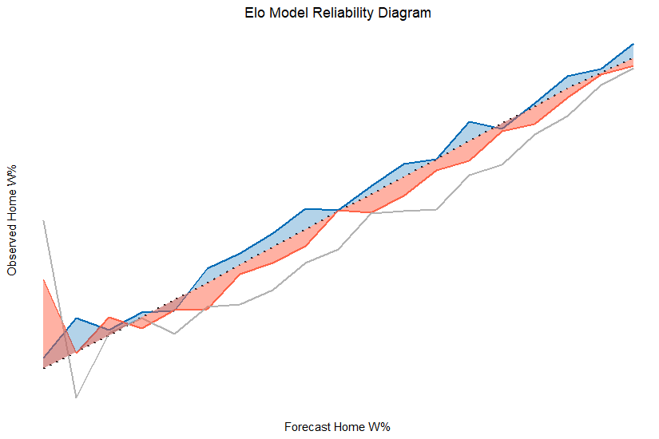
By eye it looks like the home elo should be 65/70ish. I wonder if the elo reliability is affected by the beggning and end of every season, the code below will take the approximately middle 800 games of each of the five seasons(so 4000 games) to see if it looks any different
middle800 <- c(230:1029, 1460:2259, 2690:3489, 3920:4719, 5150:5949)
#trying the same thing with the middle800
e50 <- allgames_df_50[middle800,] %>% mutate(bins = cut(h_w_prob,breaks=c(seq(0,1,by=.05)))) %>%
group_by(bins) %>%
summarise(n_50=n(),
pred_w_50=mean(h_w_prob),
real_w_50=mean(game_outcome==1))
e100 <- allgames_df_100[middle800,] %>% mutate(bins = cut(h_w_prob,breaks=c(seq(0,1,by=.05)))) %>%
group_by(bins) %>%
summarise(n_100=n(),
pred_w_100=mean(h_w_prob),
real_w_100=mean(game_outcome==1))
e150 <- allgames_df_150[middle800,] %>% mutate(bins = cut(h_w_prob,breaks=c(seq(0,1,by=.05)))) %>%
group_by(bins) %>%
summarise(n_150=n(),
pred_w_150=mean(h_w_prob),
real_w_150=mean(game_outcome==1))
e_all <- cbind(e50,e100,e150) %>% select(-c(5,9))
ggplot(e_all, aes(x=bins)) +
geom_line(aes(y=pred_w_50), color='black', size=1, group=1, linetype="dotted") +
geom_line(aes(y=real_w_50), color='#006BB6', size=.5, group=1) +
geom_line(aes(y=real_w_100), color='tomato', size=.5, group=1) +
geom_line(aes(y=real_w_150), color='grey70', size=.5, group=1) +
geom_ribbon(aes(x=1:length(bins),ymin=real_w_50,ymax=pred_w_50),fill = "#006BB6",alpha=.3) +
geom_ribbon(aes(x=1:length(bins),ymin=real_w_100,ymax=pred_w_50),fill = "tomato",alpha=.5) +
theme_bw() +
theme(panel.border = element_blank(),
panel.grid.major = element_blank(),
panel.grid.minor = element_blank(),
legend.position = "none",
axis.text.x = element_blank(),
axis.ticks.x = element_blank(),
axis.text.y = element_blank(),
axis.ticks.y = element_blank(),
plot.title = element_text(hjust = 0.5)) +
labs(x="Forecast Home W%", y="Observed Home W%") +
ggtitle("Elo Model Reliability Diagram")library(knitr)
knitr::include_graphics('~\\R\\bookdown-demo-main\\bookdown-demo-main\\images\\home_elo_2.png')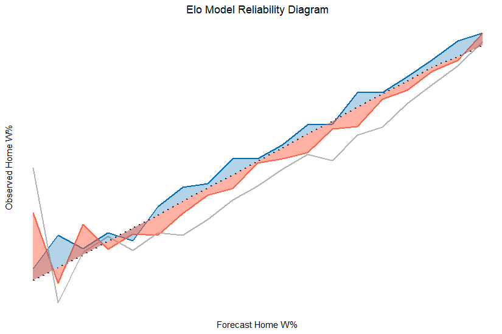
Somewhat surprisingly, it looks pretty much the same. I suppose the premise of elo is that it is broadly but not that specifically accurate.
rm(allgames_df_100,allgames_df_150,allgames_df_50,e_all,e100,e150,e50,elo_t0)Check h_adv_3.R to further investigate how to present the right home elo advantage, for now I think it’s probably about 70
rm(allgames_df_65,allgames_df_70, allgames_df_75,check,e_all,e_all_diff,e_melt,e65,e70,e75,elo_t0)I will change the elo home advantage in the original Base Elo code to be 70. So as of now, the allgames_df will be generated using that home advantage.
3.5 Elo Visualizations
Obviously the model isn’t perfect, but it’s about as good of an elo as it’s going to get. Here are some visualizations using historical elo. This is mostly based on replicating the graph at the top of https://projects.fivethirtyeight.com/complete-history-of-the-nba/#warriors
A reminder: the data set here is only from 2015-2019 (the seasons ending in those years).
3.5.1 Knicks Elo
NYK_home <- allgames_df %>% filter(home_team == "New York Knicks") %>%
select(game_id,date,season,home_team,home_elo) %>%
rename(team = home_team, elo = home_elo)
NYK_away <- allgames_df %>% filter(away_team == "New York Knicks") %>%
select(game_id,date,season,away_team,away_elo) %>%
rename(team = away_team, elo = away_elo)
NYK_all <- rbind(NYK_home,NYK_away) %>%
arrange(game_id)
rm(NYK_home,NYK_away)#first try
ggplot(NYK_all, aes(x=1:nrow(NYK_all), y=elo)) +
geom_line(size=.75) +
geom_vline(xintercept = c(1,83,165,247,329,410), linetype = "dotted", color = "darkgrey", size=1) +
theme_bw() +
labs(x="game")
#looks horrible but also the huge jumps between seasons should be removed
ggplot(NYK_all) +
geom_line(aes(x=1:nrow(NYK_all), y=elo, group = season), size=.75) +
geom_vline(xintercept = c(1,83,165,247,329,410), linetype = "dotted", color = "darkgrey", size=1) +
theme(panel.border = element_blank(),
panel.grid.major = element_blank(),
panel.grid.minor = element_blank()) +
labs(x='Game #', y='Elo') +
ggtitle("Knicks Elo 2015-2019")library(knitr)
knitr::include_graphics('~\\R\\bookdown-demo-main\\bookdown-demo-main\\images\\elo_knicks_1.png')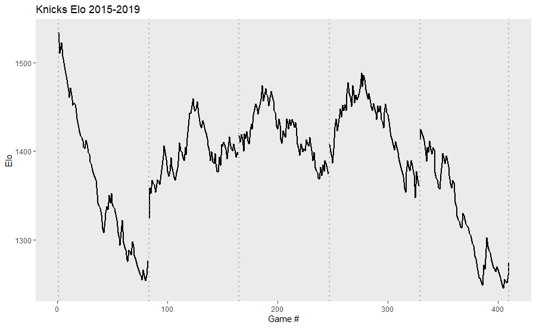
ggplot(NYK_all, aes(x=1:nrow(NYK_all), y=elo, group = as.factor(season), color=as.factor(season))) +
geom_line(aes(color=as.factor(season)), size = .75) +
geom_vline(xintercept = c(1,83,165,247,329,410), linetype = "dotted", color = "darkgrey", size=1) +
scale_color_manual(values=c('#006BB6','#F58426','#006BB6','#F58426','#006BB6')) +
theme(panel.border = element_blank(),
panel.grid.major = element_blank(),
panel.grid.minor = element_blank(),
legend.position = "none)") +
scale_x_continuous(expand = c(.01,0)) +
labs(x='Game #', y='Elo') +
ggtitle("Knicks Elo 2015-2019")library(knitr)
knitr::include_graphics('~\\R\\bookdown-demo-main\\bookdown-demo-main\\images\\elo_knicks_2.png')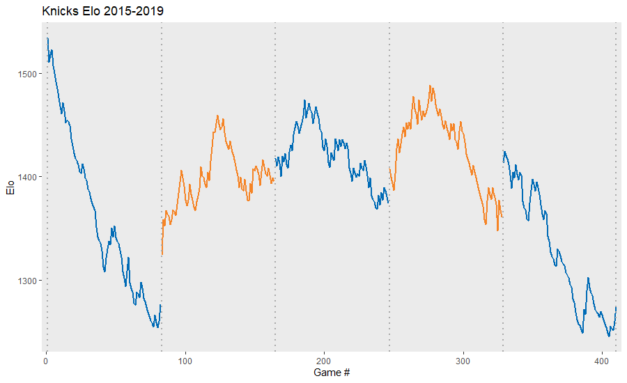
#bad attempt to add text
ggplot(NYK_all, aes(x=1:nrow(NYK_all), y=elo, group = as.factor(season), color=as.factor(season))) +
geom_line(aes(color=as.factor(season)), size = .75) +
geom_vline(xintercept = c(83,165,247,329), color = "darkgrey", size=1) +
geom_hline(yintercept=c(1300,1500,1700), linetype="dotted", color="darkgrey", size = 1) +
annotate("text", x=110, y=c(1315,1515,1715), label = c("Laughable","Average","Contender")) +
scale_color_manual(values=c('#006BB6','#F58426','#006BB6','#F58426','#006BB6')) +
theme(panel.border = element_blank(),
panel.grid.major = element_blank(),
panel.grid.minor = element_blank(),
legend.position = "none)",
axis.text.x = element_blank(),
axis.ticks.x = element_blank()) +
scale_x_continuous(expand = c(.01,0)) +
scale_y_continuous(limits = c(1200,1800)) +
labs(x='', y='Elo') +
ggtitle("Knicks Elo 2015-2019")library(knitr)
knitr::include_graphics('~\\R\\bookdown-demo-main\\bookdown-demo-main\\images\\elo_knicks_3.png')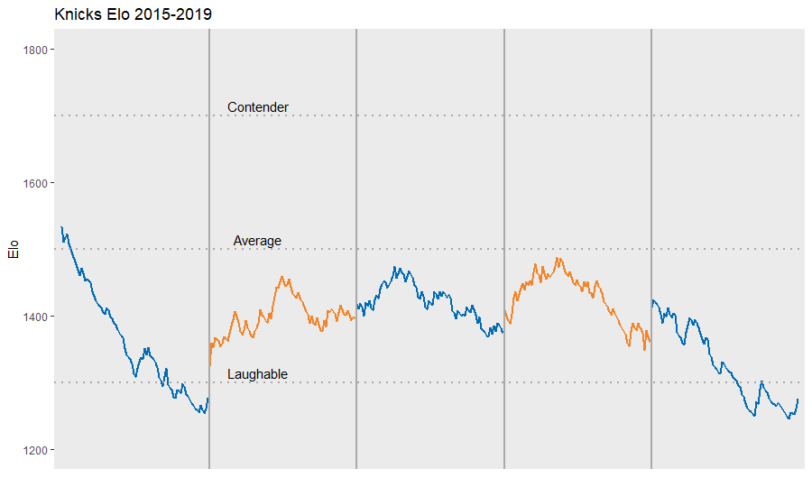
3.5.2 Celtics Elo
BOS_home <- allgames_df %>% filter(home_team == "Boston Celtics") %>%
select(game_id,date,season,home_team,home_elo) %>%
rename(team = home_team, elo = home_elo)
BOS_away <- allgames_df %>% filter(away_team == "Boston Celtics") %>%
select(game_id,date,season,away_team,away_elo) %>%
rename(team = away_team, elo = away_elo)
BOS_all <- rbind(BOS_home,BOS_away) %>%
arrange(game_id)
rm(BOS_home,BOS_away)#do you even need the vertical lines with different colored seasons?
ggplot(BOS_all, aes(x=1:nrow(BOS_all), y=elo, group = as.factor(season), color=as.factor(season))) +
geom_line(aes(color=as.factor(season)), size = .75) +
#geom_vline(xintercept = c(1,83,165,247,329,410), linetype = "dotted", color = "darkgrey", size=1) +
scale_color_manual(values=c('#007A33','#BA9653','#007A33','#BA9653','#007A33')) +
theme(panel.border = element_blank(),
panel.grid.major = element_blank(),
panel.grid.minor = element_blank(),
legend.position = "none)",
axis.text.x = element_blank(),
axis.ticks.x = element_blank()) +
scale_x_continuous(expand = c(.01,0)) +
scale_y_continuous(limits = c(1200,1800)) +
labs(x='', y='Elo') +
ggtitle("Celtics Elo 2015-2019")library(knitr)
knitr::include_graphics('~\\R\\bookdown-demo-main\\bookdown-demo-main\\images\\elo_celtics_1.png')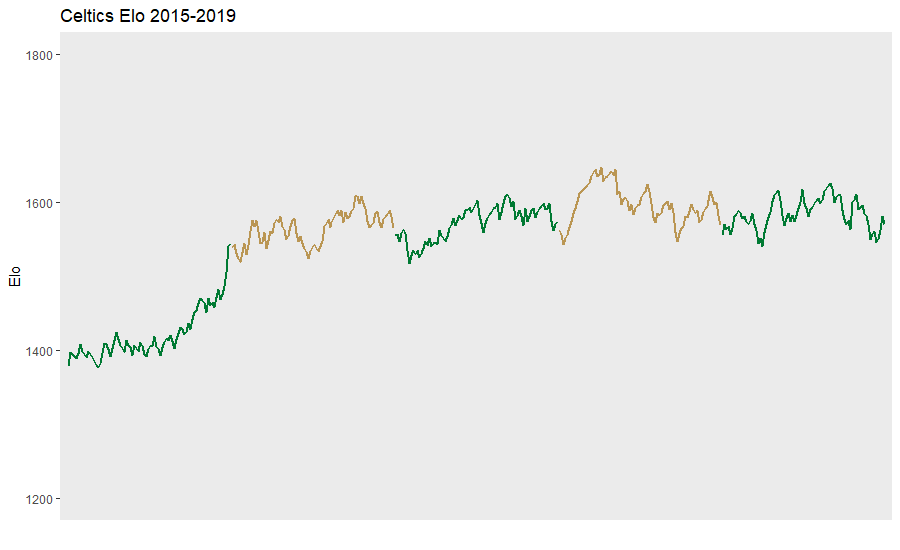
3.5.3 Knicks v Celtics
ggplot(BOS_all, aes(x=1:nrow(BOS_all), y=elo, group = as.factor(season))) +
geom_line(aes(color=as.factor(season)), size = .75, color="#007A33") +
geom_line(aes(y=NYK_all$elo), size = .75, color="#F58426") +
geom_vline(xintercept = c(1,83,165,247,329,410), linetype = "dotted", color = "darkgrey", size=1) +
theme(panel.border = element_blank(),
panel.grid.major = element_blank(),
panel.grid.minor = element_blank(),
legend.position = "none)",
axis.text.x = element_blank(),
axis.ticks.x = element_blank()) +
scale_x_continuous(expand = c(.01,0)) +
scale_y_continuous(limits = c(1200,1800)) +
labs(x='', y='Elo') +
ggtitle("Knicks v Celtics Elo 2015-2019")library(knitr)
knitr::include_graphics('~\\R\\bookdown-demo-main\\bookdown-demo-main\\images\\elo_knicks_v_celtics_1.png')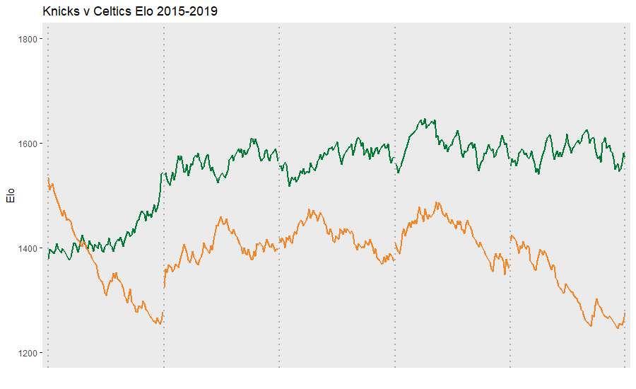
3.5.4 Atlantic Division
graph_home <- allgames_df %>% filter(home_team %in% teams_df$teams_full[teams_df$division == 'Atlantic']) %>%
select(game_id,date,season,home_team,home_elo) %>%
rename(team = home_team, elo = home_elo)
graph_away <- allgames_df %>% filter(away_team %in% teams_df$teams_full[teams_df$division == 'Atlantic']) %>%
select(game_id,date,season,away_team,away_elo) %>%
rename(team = away_team, elo = away_elo)
graph_all <- rbind(graph_home,graph_away) %>%
arrange(game_id)
rm(graph_home,graph_away)
library(data.table)
graph_all <- graph_all %>% mutate(teamgame = rowid(team))ggplot(graph_all, aes(x=teamgame,y=elo,group=team)) +
geom_line(aes(color=team), size=.75) +
scale_color_manual(values=c(paste(teams_df$color1[teams_df$teams_full == 'Boston Celtics']),
paste(teams_df$color1[teams_df$teams_full == 'Brooklyn Nets']),
paste(teams_df$color2[teams_df$teams_full == 'New York Knicks']),
paste(teams_df$color1[teams_df$teams_full == 'Philadelphia 76ers']),
paste(teams_df$color1[teams_df$teams_full == 'Toronto Raptors']))) +
labs(x='Team Game', y='Elo') +
ggtitle("Atlantic Division Elos 2015-2019")library(knitr)
knitr::include_graphics('~\\R\\bookdown-demo-main\\bookdown-demo-main\\images\\elo_atlantic_1.png')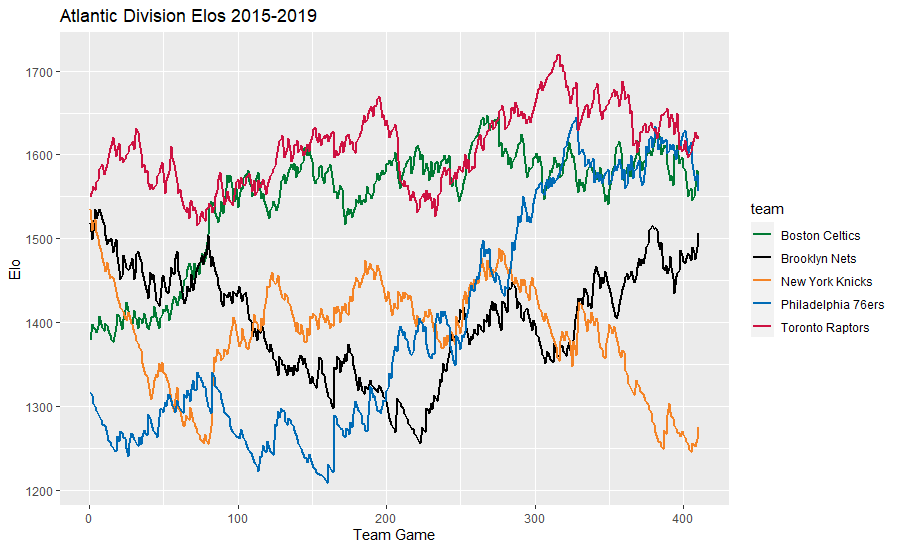
3.5.5 fivethirtyeight Replicas
all_home <- allgames_df %>% filter(home_team %in% teams_df$teams_full) %>%
select(game_id,date,season,home_team,home_elo) %>%
rename(team = home_team, elo = home_elo)
all_away<- allgames_df %>% filter(away_team %in% teams_df$teams_full) %>%
select(game_id,date,season,away_team,away_elo) %>%
rename(team = away_team, elo = away_elo)
all_all <- rbind(all_home,all_away) %>%
arrange(game_id) %>%
mutate(teamgame = rowid(team))
rm(all_home,all_away)#Warriors, not a bad scheme
ggplot(all_all, aes(x=teamgame,y=elo,group=team)) +
geom_line(color="lightgrey") +
geom_line(data = subset(all_all, team == "Golden State Warriors"), size=1) +
#geom_vline(xintercept = c(1,83,165,247,329,410), linetype = "dotted", color = "darkgrey", size=1) +
theme_bw() +
theme(panel.border = element_blank(),
panel.grid.major = element_blank(),
panel.grid.minor = element_blank(),
legend.position = "none)",
axis.text.x = element_blank(),
axis.ticks.x = element_blank()) +
scale_x_continuous(expand = c(.01,0)) +
scale_y_continuous(limits = c(1150,1850)) +
labs(x = "") +
ggtitle("Warriors v NBA by Elo")library(knitr)
knitr::include_graphics('~\\R\\bookdown-demo-main\\bookdown-demo-main\\images\\elo_538_warriors_1.png')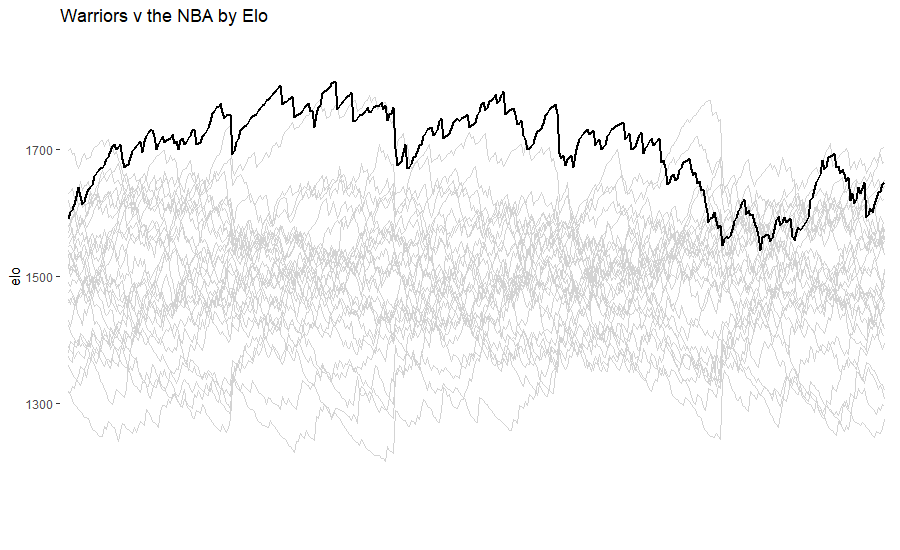
#Knicks, not a bad scheme
ggplot(all_all, aes(x=teamgame,y=elo,group=team)) +
geom_line(color="lightgrey") +
geom_line(data = subset(all_all, team == "New York Knicks"), size=1) +
#geom_vline(xintercept = c(1,83,165,247,329,410), linetype = "dotted", color = "darkgrey", size=1) +
theme_bw() +
theme(panel.border = element_blank(),
panel.grid.major = element_blank(),
panel.grid.minor = element_blank(),
legend.position = "none)",
axis.text.x = element_blank(),
axis.ticks.x = element_blank()) +
scale_x_continuous(expand = c(.01,0)) +
scale_y_continuous(limits = c(1175,1825)) +
labs(x = "") +
ggtitle("Knicks v NBA by elo")
#i don't love the y axis labelslibrary(knitr)
knitr::include_graphics('~\\R\\bookdown-demo-main\\bookdown-demo-main\\images\\elo_538_knicks_1.png')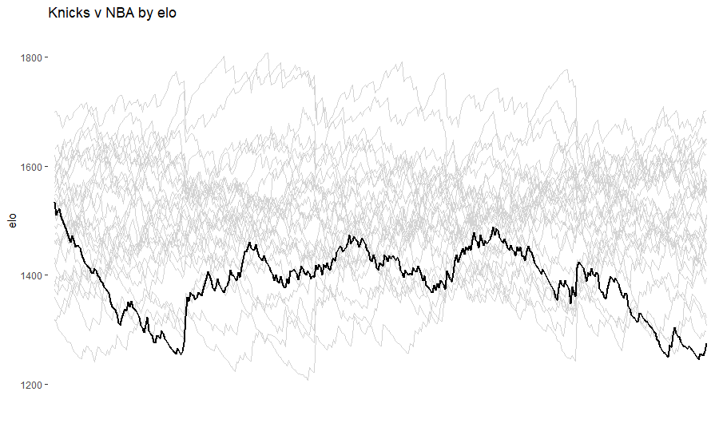
#trying a few things from the last chart
ggplot(all_all, aes(x=teamgame,y=elo,group=team)) +
geom_line(color="lightgrey") +
geom_line(data = subset(all_all, team == "New York Knicks"), size=1,
color=paste(teams_df$color2[teams_df$teams_full == 'New York Knicks'])) +
#geom_vline(xintercept = c(1,83,165,247,329,410), linetype = "dotted", color = "darkgrey", size=1) +
theme_bw() +
theme(panel.border = element_blank(),
panel.grid.major = element_blank(),
panel.grid.minor = element_blank(),
legend.position = "none)",
axis.text.x = element_blank(),
axis.ticks.x = element_blank(),
axis.text.y = element_blank(),
axis.ticks.y = element_blank(),
axis.title.x = element_blank(),
axis.title.y = element_blank(),
plot.title = element_text(hjust = 0.5)) +
scale_x_continuous(expand = c(.01,0)) +
scale_y_continuous(limits = c(1175,1825), expand = c(0,0)) +
ggtitle("Knicks v NBA by elo")library(knitr)
knitr::include_graphics('~\\R\\bookdown-demo-main\\bookdown-demo-main\\images\\elo_538_knicks_2.png')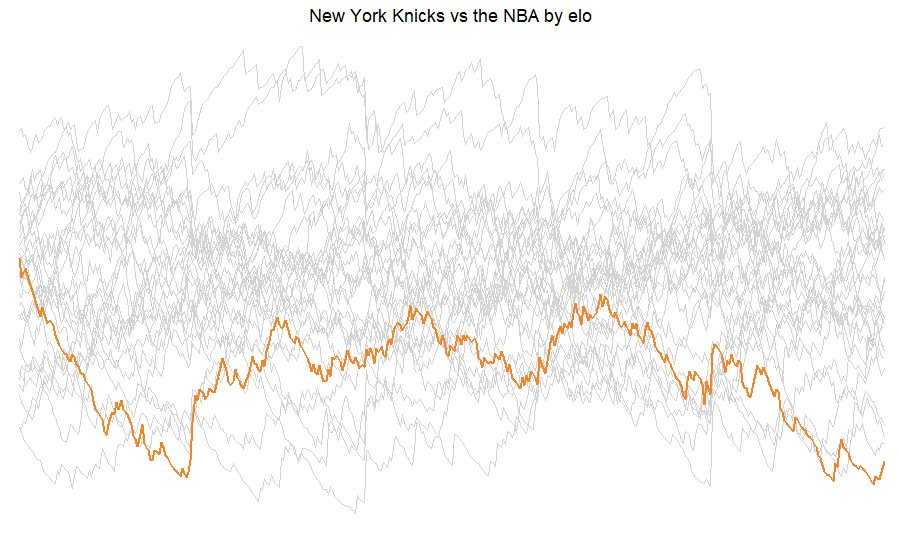
ggplot(all_all, aes(x=teamgame,y=elo,group=team)) +
geom_line(color="lightgrey") +
geom_line(data = subset(all_all, team %in% teams_df$teams_full[teams_df$division == 'Atlantic']),
size=1, aes(color=team)) +
scale_color_manual(values=c(paste(teams_df$color1[teams_df$teams_full == 'Boston Celtics']),
paste(teams_df$color1[teams_df$teams_full == 'Brooklyn Nets']),
paste(teams_df$color2[teams_df$teams_full == 'New York Knicks']),
paste(teams_df$color1[teams_df$teams_full == 'Philadelphia 76ers']),
paste(teams_df$color1[teams_df$teams_full == 'Toronto Raptors']))) +
#geom_vline(xintercept = c(1,83,165,247,329,410), linetype = "dotted", color = "darkgrey", size=1) +
theme_bw() +
theme(panel.border = element_blank(),
panel.grid.major = element_blank(),
panel.grid.minor = element_blank(),
#legend.position = "none)",
axis.text.x = element_blank(),
axis.ticks.x = element_blank(),
axis.text.y = element_blank(),
axis.ticks.y = element_blank(),
axis.title.x = element_blank(),
axis.title.y = element_blank(),
plot.title = element_text(hjust = 0.5)) +
scale_x_continuous(expand = c(.01,0)) +
scale_y_continuous(limits = c(1175,1825), expand = c(0,0)) +
ggtitle("Atlantic Division v NBA by elo")library(knitr)
knitr::include_graphics('~\\R\\bookdown-demo-main\\bookdown-demo-main\\images\\elo_538_atlantic_1.png')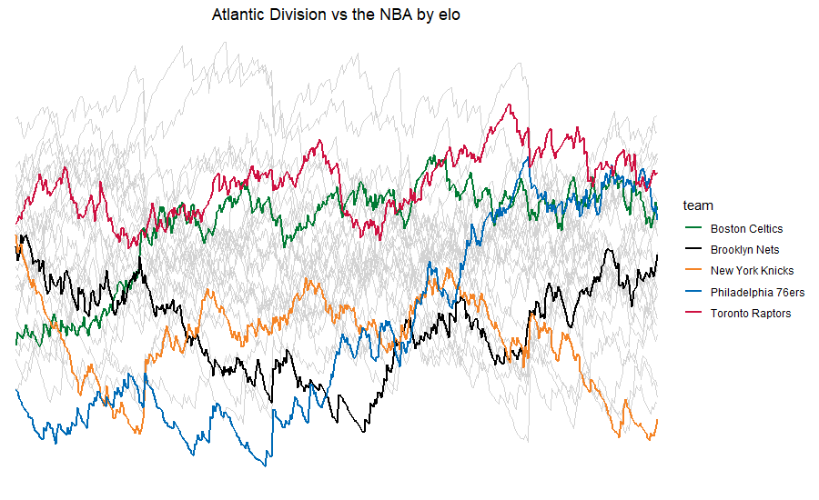
rm(all_all,BOS_all,NYK_all,graph_all)3.6 Calibration
3.6.1 Initial
Since the Verification chapter, I have changed the home advantage to 70. Will show verification visuals etc for the new model.
allgames_df %>% mutate(bins = cut(h_w_prob,breaks=c(seq(0,1,by=.05)))) %>%
group_by(bins) %>%
summarise(n=n(),
pred_w=mean(h_w_prob),
real_w=mean(game_outcome==1)) %>%
ggplot(aes(x=bins)) +
geom_line(aes(x=bins,y=pred_w), color="lightgrey", size=1, group=1) +
geom_line(aes(x=bins,y=real_w), color='black', size=.5, group=1) +
geom_ribbon(aes(x=1:length(bins),ymin=ifelse(n<150,pred_w,real_w),ymax=pred_w),alpha=.4) +
geom_ribbon(aes(x=1:length(bins),ymin=ifelse(n<150,real_w,pred_w),ymax=pred_w),alpha=.1) +
theme(panel.border = element_blank(),
panel.grid.major = element_blank(),
panel.grid.minor = element_blank(),
legend.position = "none)",
axis.text.x = element_blank(),
axis.ticks.x = element_blank(),
axis.text.y = element_blank(),
axis.ticks.y = element_blank(),
plot.title = element_text(hjust = 0.5)) +
labs(x="predicted Pr(W)", y="Real W %") +
ggtitle("Reliability Diagram with elo home adv at 70")library(knitr)
knitr::include_graphics('~\\R\\bookdown-demo-main\\bookdown-demo-main\\images\\elo_calibration_1.png')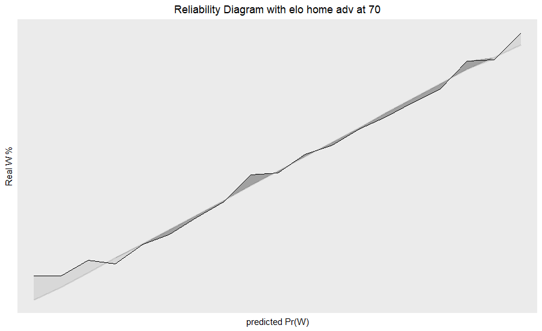
library(DescTools)
elo.glm <- glm(as.factor(game_outcome) ~ h_w_prob, data=allgames_df, family=binomial)
BS <- BrierScore(elo.glm)
print(BS)
[1] 0.2102264Let’s get the Brier Score of the original allgames_df with h_adv at 100, will have to regenerate that df as allgames_df_100 using code from Home Advantage Elo Calibration
#read in the singleseason logdfs again
log2015df <- read.csv('~\\R\\Basketball\\model dfs\\log2015df.csv')
log2016df <- read.csv('~\\R\\Basketball\\model dfs\\log2016df.csv')
log2017df <- read.csv('~\\R\\Basketball\\model dfs\\log2017df.csv')
log2018df <- read.csv('~\\R\\Basketball\\model dfs\\log2018df.csv')
log2019df <- read.csv('~\\R\\Basketball\\model dfs\\log2019df.csv')
#get a df that will act as a reset for nba_elo_ratings (elo_t0)
nbaallelo538 <- read_csv("~/R/Basketball/bets/excel bet data/nbaallelo538.csv")
check <- nbaallelo538 %>%
filter(year_id == 2015 & seasongame == 1) %>%
select(team_id,elo_i,date_game) %>%
arrange(team_id)
team <- teams_df$teams_full
elo_rating <- check$elo_i
game_id <- c(rep(0,30))
date <- mdy(check$date_game)
elo_t0 <- data.frame(team, elo_rating, game_id, date)
rm(team, elo_rating, game_id, date)
rm(check,nbaallelo538)
#set a range of home advantages
#you could do this with a loop but for now just do manually and see if you can put on one graph
#with the loop, the functions would be defined before this
#reset the nba_elo_ratings table (i don't think you actually need to do this)
nba_elo_ratings <- elo_t0
#MANUALLY set the elo home advantage and the name of the allgames_df at the bottom
h_adv <- 100
#functions to define elo calculations
calc_expected_score <- function(team_rating, opp_team_rating) {
return(1 / (1 + 10^((opp_team_rating - team_rating) / 400)))}
calc_new_rating <- function(team_rating, observed_score, expected_score, k_factor) {
return(team_rating + k_factor * (observed_score - expected_score))}
elo_prediction <- function(home_rating, away_rating){
E_home <- 1./(1 + 10 ** ((away_rating - (home_rating+h_adv)) / (400.)))
return(E_home)}
score_prediction <- function(home_rating,away_rating){
xscore <- (home_rating+h_adv - away_rating)/28
return (xscore)}
silverK <- function(MOV, elo_diff){
K_0multi <<- 20
ifelse(MOV>0,
K_0multi <<- 20*((MOV+3)**(0.8)/(7.5+0.006*(elo_diff))),
K_0multi <<- 20*((-MOV+3)**(0.8)/(7.5+0.006*(-elo_diff))))
return(K_0multi)}
for (year in years) {
logdf <- get(paste0("log",year,"df"))
#add new columns for elo ratings to fill
logdf <- logdf %>% mutate(home_elo=0,away_elo=0,
h_w_prob=0,a_w_prob=0,
h_xscorediff=0,a_xscorediff=0)
for (game_i in 1:nrow(logdf)) {
home_team <- logdf$home_team[game_i]
away_team <- logdf$away_team[game_i]
home_win <- logdf$game_outcome[game_i]
game_id <- logdf$game_id[game_i]
home_rating <- nba_elo_ratings %>% filter(team == home_team) %>% pull(elo_rating)
away_rating <- nba_elo_ratings %>% filter(team == away_team) %>% pull(elo_rating)
logdf$home_elo[game_i] = home_rating
logdf$away_elo[game_i] = away_rating
logdf$h_w_prob[game_i] = elo_prediction(home_rating, away_rating)
logdf$a_w_prob[game_i] = 1 - elo_prediction(home_rating, away_rating)
logdf$h_xscorediff[game_i] = score_prediction(home_rating, away_rating)
logdf$a_xscorediff[game_i] = -score_prediction(home_rating, away_rating)
#get new Kfactor
MOV <- logdf$home_pts[game_i] - logdf$away_pts[game_i]
elo_diff <- logdf$home_elo[game_i] - logdf$away_elo[game_i]
K_new <- silverK(MOV, elo_diff)
# Now get their new ratings:
new_home_rating <- calc_new_rating(home_rating, home_win, calc_expected_score(home_rating + h_adv, away_rating), K_new)
new_away_rating <- calc_new_rating(away_rating, 1 - home_win, calc_expected_score(away_rating, home_rating + h_adv), K_new)
# Update elo table with new ratings, game_id, and date:
nba_elo_ratings$elo_rating[nba_elo_ratings$team == home_team] = new_home_rating
nba_elo_ratings$elo_rating[nba_elo_ratings$team == away_team] = new_away_rating
nba_elo_ratings$game_id[nba_elo_ratings$team == home_team] = logdf$game_id[game_i]
nba_elo_ratings$game_id[nba_elo_ratings$team == away_team] = logdf$game_id[game_i]
nba_elo_ratings$date[nba_elo_ratings$team == home_team] = logdf$date[game_i]
nba_elo_ratings$date[nba_elo_ratings$team == away_team] = logdf$date[game_i]
}
#assign logdf to the right year
assign(paste0("log",year,"df"), logdf)
#update nba_elo_ratings table to reflect year-to-year carry-over
nba_elo_ratings <- nba_elo_ratings %>%
mutate(elo_rating = .75*elo_rating + .25*1500)
}
allgames_df_100 <- rbind(log2015df,log2016df,log2017df,log2018df,log2019df)
rm(log2015df,log2016df,log2017df,log2018df,log2019df)
rm(away_rating, away_team, elo_diff, game_i, game_id, home_rating, home_team, home_win, K_0multi, K_new, MOV,logdf)
rm(new_away_rating, new_home_rating, silverK, score_prediction, elo_prediction, calc_new_rating, calc_expected_score)
rm(h_adv, year)
rm(elo_t0)Now, to get Brier Skill Score vs 2 different reference Brier Scores. First, using normal distribution; second, using Brier Score from allgames_df_100.
ref.glm <- glm(as.factor(game_outcome) ~ rnorm(6150,mean=.5,sd=.1), data=allgames_df, family=binomial)
BSref <- BrierScore(ref.glm)
print(BSref)
[1] 0.2429778
BSS <- 1-(BS/BSref)
print(BSS)
[1] 0.1347918ref.glm <- glm(as.factor(game_outcome) ~ h_w_prob, data=allgames_df_100, family=binomial)
BSref <- BrierScore(ref.glm)
print(BSref)
[1] 0.2102569
BSS <- 1-(BS/BSref)
print(BSS)
[1] 0.0001450182What does this mean?
library(ROCR)
model = glm(as.factor(game_outcome) ~ h_w_prob, data=allgames_df, family = binomial(link="logit"))
pred = predict(model,allgames_df,type='response')
pred = prediction(allgames_df$h_w_prob, as.factor(allgames_df$game_outcome))
perf = performance(pred, "acc")
plot(perf)library(knitr)
knitr::include_graphics('~\\R\\bookdown-demo-main\\bookdown-demo-main\\images\\elo_calibration_roc_1.png')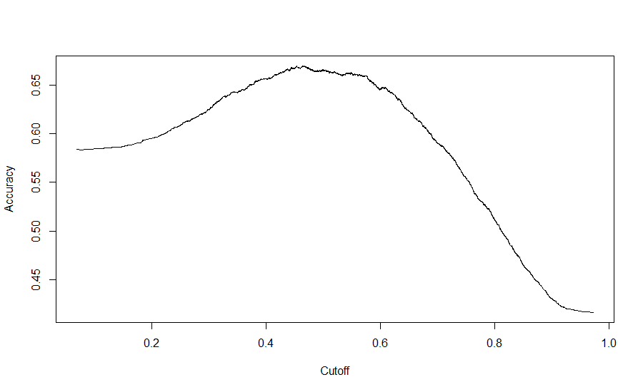
roc = performance(pred,"tpr","fpr")
plot(roc,colorize=T, lwd=2)
abline(a=0,b=1)library(knitr)
knitr::include_graphics('~\\R\\bookdown-demo-main\\bookdown-demo-main\\images\\elo_calibration_roc_2.png')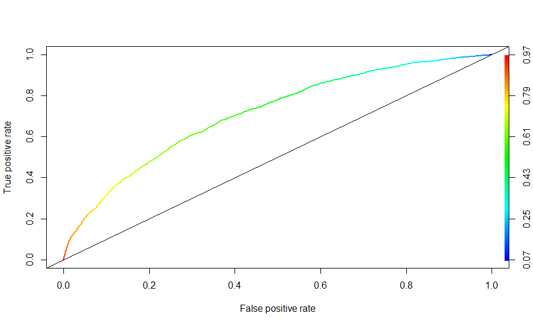
auc = performance(pred, measure = "auc")
print(auc@y.values)
[[1]]
[1] 0.7132024Can you show this ROC compared to the allgames_df_100 ROC side by side? I believe this is the code but that the ROC charts are identical, I suppose this is the wrong test.
library(pROC)
roc1 <- roc(allgames_df$game_outcome, allgames_df$h_w_prob)
roc2 <- roc(allgames_df_100$game_outcome, allgames_df$h_w_prob)
ggroc(list(h_adv_70 = roc1, h_adv_100 = roc2))library(knitr)
knitr::include_graphics('~\\R\\bookdown-demo-main\\bookdown-demo-main\\images\\elo_calibration_roc_3.png')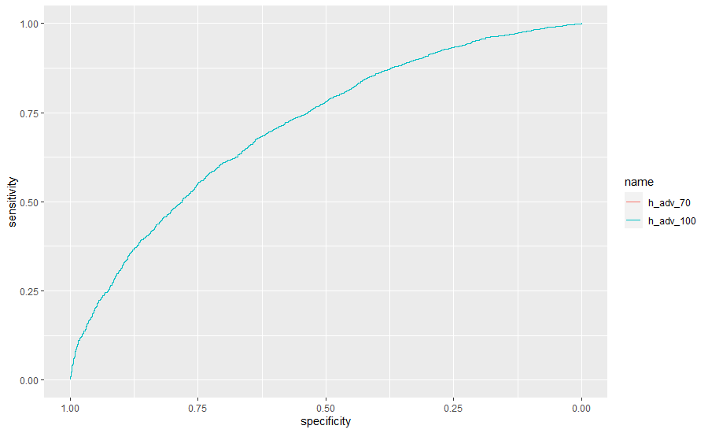
rm(elo.glm,model,perf,pred,ref.glm,roc,roc1,roc2,BS,BSref,BSS,auc)So you still don’t have an effective way of comparing models. Should you just see how many predictions are correct? Clearly a flawed approach, but let’s see.
Here are predictions (if you did it right…) for allgames_df:
logit <- glm(as.factor(game_outcome) ~ h_w_prob,
data=allgames_df,family=binomial(link='logit'))
logit.preds <- predict(logit,allgames_df,type="response")
elo_pred <- ifelse(logit.preds >= .5, 1, 0)
table(allgames_df$game_outcome, elo_pred)
elo_pred
0 1
0 1243 1317
1 745 2845
mean(allgames_df$game_outcome == elo_pred)
[1] 0.6647154Predictions for allgames_df_100:
logit <- glm(as.factor(game_outcome) ~ h_w_prob,
data=allgames_df_100,family=binomial(link='logit'))
logit.preds <- predict(logit,allgames_df_100,type="response")
elo_pred <- ifelse(logit.preds >= .5, 1, 0)
table(allgames_df_100$game_outcome, elo_pred)
elo_pred
0 1
0 1221 1339
1 717 2873
mean(allgames_df_100$game_outcome == elo_pred)
[1] 0.6656911Is the whole reliability diagram scheme incorrect? I’m not sure. They are basically the same number of correct predictions. Can you graph the tables in a visually appealing way?
3.6.2 Adding Stats to allgames_df
To use season-to-date averages (advanced stats from b-ref), you need to pull them from teamglfull and add to allgames_df (will create a new allgames_df2). Each row (game) will have each team’s STD averages (that is, season averages going INTO the game). All the data in each row (other than game_outcome, PTS, and oPTS) are ignorant of the results of the game in that row.
#pull stats from teamglfull and add to each row of allgames_df, make new allgames_df2
#set empty dataframe to be filled with prev_82g info
home_prev_82g_stats <- data.frame()
away_prev_82g_stats <- data.frame()
for (i in 1:nrow(allgames_df)) {
home_team <- allgames_df$home_team[i]
away_team <- allgames_df$away_team[i]
date <- allgames_df$date[i]
#get team abbreviations by referencing the teams_df
home_team_abv <- teams_df$teams_abr[teams_df$teams_full == home_team]
away_team_abv <- teams_df$teams_abr[teams_df$teams_full == away_team]
#get the indices in the teamglfull for the hometeamgame and awayteamgame
homeind <- which((teamglfull$Team == home_team_abv) & (teamglfull$Date == date))
awayind <- which((teamglfull$Team == away_team_abv) & (teamglfull$Date == date))
#calc indices for each team's previous 82 games (season-to-date)
homeind_prev82 <- pmax((homeind-82),0):pmax((homeind-1),0)
awayind_prev82 <- pmax((awayind-82),0):pmax((awayind-1),0)
#pull the game details
home_prev_82g <- teamglfull[homeind_prev82, ] %>% filter(Team==home_team_abv)
away_prev_82g <- teamglfull[awayind_prev82, ] %>% filter(Team==away_team_abv)
home_prev_82g_avgs <- if (length(home_prev_82g)>0) {
home_prev_82g %>% select(8:27) %>% apply(2,mean)
} else {NA}
away_prev_82g_avgs <- if (length(away_prev_82g)>0) {
away_prev_82g %>% select(8:27) %>% apply(2,mean)
} else {NA}
#info from prev82 g
home_prev_82g_1line <- data.frame(t(home_prev_82g_avgs))
away_prev_82g_1line <- data.frame(t(away_prev_82g_avgs))
#put the one-lines into the original empty data frame
home_prev_82g_stats <- rbind(home_prev_82g_stats, home_prev_82g_1line)
away_prev_82g_stats <- rbind(away_prev_82g_stats, away_prev_82g_1line)}
#rename with h/a prefixes
home_prev_82g_stats <- home_prev_82g_stats %>% rename_with( ~ paste0("hSTD", .x))
away_prev_82g_stats <- away_prev_82g_stats %>% rename_with( ~ paste0("aSTD", .x))
allgames_df2 <- cbind(allgames_df, home_prev_82g_stats,away_prev_82g_stats)
rm(away_team,away_team_abv,awayind,home_prev_g_stats,home_team,home_team_abv,homeind)
rm(date,i)
rm(away_prev_82g,away_prev_82g_1line,away_prev_82g_avgs,away_prev_82g_stats,awayind_prev82)
rm(home_prev_82g,home_prev_82g_1line,home_prev_82g_avgs,home_prev_82g_stats,homeind_prev82)print(head(allgames_df2, n=20))
game_id date season home_team away_team home_pts away_pts game_outcome home_elo
1 201500001 2014-10-28 2015 New Orleans Pelicans Orlando Magic 101 84 1 1457.218
2 201500002 2014-10-28 2015 San Antonio Spurs Dallas Mavericks 101 100 1 1699.502
3 201500003 2014-10-28 2015 Los Angeles Lakers Houston Rockets 90 108 0 1421.998
4 201500004 2014-10-29 2015 Charlotte Hornets Milwaukee Bucks 108 106 1 1547.218
5 201500005 2014-10-29 2015 Indiana Pacers Philadelphia 76ers 103 91 1 1532.675
6 201500006 2014-10-29 2015 Toronto Raptors Atlanta Hawks 109 102 1 1550.747
7 201500007 2014-10-29 2015 Miami Heat Washington Wizards 107 95 1 1579.375
8 201500008 2014-10-29 2015 Boston Celtics Brooklyn Nets 121 105 1 1378.546
9 201500009 2014-10-29 2015 New York Knicks Chicago Bulls 80 104 0 1534.442
10 201500010 2014-10-29 2015 Memphis Grizzlies Minnesota Timberwolves 105 101 1 1578.406
11 201500011 2014-10-29 2015 Denver Nuggets Detroit Pistons 89 79 1 1473.049
12 201500012 2014-10-29 2015 Utah Jazz Houston Rockets 93 104 0 1373.317
13 201500013 2014-10-29 2015 Phoenix Suns Los Angeles Lakers 119 99 1 1560.121
14 201500014 2014-10-29 2015 Sacramento Kings Golden State Warriors 77 95 0 1431.157
15 201500015 2014-10-29 2015 Portland Trail Blazers Oklahoma City Thunder 106 89 1 1567.832
16 201500016 2014-10-30 2015 Orlando Magic Washington Wizards 98 105 0 1351.936
17 201500017 2014-10-30 2015 Cleveland Cavaliers New York Knicks 90 95 0 1463.721
18 201500018 2014-10-30 2015 Minnesota Timberwolves Detroit Pistons 97 91 1 1509.550
away_elo h_w_prob a_w_prob h_xscorediff a_xscorediff hSTDPTS hSTDoPTS hSTDORtg hSTDDRtg hSTDPace hSTDFTr hSTDX3PAr
1 1359.427 0.7242992 0.2757008 5.9925714 -5.9925714 NaN NaN NaN NaN NaN NaN NaN
2 1592.010 0.7353090 0.2646910 6.3390107 -6.3390107 NaN NaN NaN NaN NaN NaN NaN
3 1596.464 0.3540344 0.6459656 -3.7309143 3.7309143 NaN NaN NaN NaN NaN NaN NaN
4 1317.849 0.8485545 0.1514455 10.6917643 -10.6917643 NaN NaN NaN NaN NaN NaN NaN
5 1316.424 0.8385922 0.1614078 10.2232321 -10.2232321 NaN NaN NaN NaN NaN NaN NaN
6 1490.115 0.6796098 0.3203902 4.6654357 -4.6654357 NaN NaN NaN NaN NaN NaN NaN
7 1541.439 0.6505209 0.3494791 3.8548571 -3.8548571 NaN NaN NaN NaN NaN NaN NaN
8 1518.267 0.4009900 0.5990100 -2.4900071 2.4900071 NaN NaN NaN NaN NaN NaN NaN
9 1511.003 0.6313184 0.3686816 3.3371000 -3.3371000 NaN NaN NaN NaN NaN NaN NaN
10 1513.335 0.6851478 0.3148522 4.8239643 -4.8239643 NaN NaN NaN NaN NaN NaN NaN
11 1389.299 0.7078688 0.2921312 5.4910679 -5.4910679 NaN NaN NaN NaN NaN NaN NaN
12 1605.928 0.2816966 0.7183034 -5.8075182 5.8075182 NaN NaN NaN NaN NaN NaN NaN
13 1412.535 0.7777365 0.2222635 7.7709182 -7.7709182 NaN NaN NaN NaN NaN NaN NaN
14 1590.798 0.3737846 0.6262154 -3.2014607 3.2014607 NaN NaN NaN NaN NaN NaN NaN
15 1619.781 0.5259546 0.4740454 0.6446893 -0.6446893 NaN NaN NaN NaN NaN NaN NaN
16 1533.545 0.3446874 0.6553126 -3.9860449 3.9860449 84 101 88.2 106.1 95.2 0.250 0.131
17 1510.480 0.5333977 0.4666023 0.8300617 -0.8300617 NaN NaN NaN NaN NaN NaN NaN
18 1383.617 0.7554477 0.2445523 6.9976087 -6.9976087 101 105 105.5 109.7 95.7 0.267 0.140
hSTDTS. hSTDTRB. hSTDAST. hSTDSTL. hSTDBLK. hSTDeFG. hSTDTOV. hSTDORB. hSTDFT.FGA hSTDoeFG. hSTDoTOV. hSTDoDRB.
1 NaN NaN NaN NaN NaN NaN NaN NaN NaN NaN NaN NaN
2 NaN NaN NaN NaN NaN NaN NaN NaN NaN NaN NaN NaN
3 NaN NaN NaN NaN NaN NaN NaN NaN NaN NaN NaN NaN
4 NaN NaN NaN NaN NaN NaN NaN NaN NaN NaN NaN NaN
5 NaN NaN NaN NaN NaN NaN NaN NaN NaN NaN NaN NaN
6 NaN NaN NaN NaN NaN NaN NaN NaN NaN NaN NaN NaN
7 NaN NaN NaN NaN NaN NaN NaN NaN NaN NaN NaN NaN
8 NaN NaN NaN NaN NaN NaN NaN NaN NaN NaN NaN NaN
9 NaN NaN NaN NaN NaN NaN NaN NaN NaN NaN NaN NaN
10 NaN NaN NaN NaN NaN NaN NaN NaN NaN NaN NaN NaN
11 NaN NaN NaN NaN NaN NaN NaN NaN NaN NaN NaN NaN
12 NaN NaN NaN NaN NaN NaN NaN NaN NaN NaN NaN NaN
13 NaN NaN NaN NaN NaN NaN NaN NaN NaN NaN NaN NaN
14 NaN NaN NaN NaN NaN NaN NaN NaN NaN NaN NaN NaN
15 NaN NaN NaN NaN NaN NaN NaN NaN NaN NaN NaN NaN
16 0.450 47.5 53.1 5.3 10.7 0.405 16.2 30.8 0.190 0.426 7.3 60.6
17 NaN NaN NaN NaN NaN NaN NaN NaN NaN NaN NaN NaN
18 0.525 58.8 51.3 8.4 6.0 0.488 19.3 45.2 0.198 0.549 15.8 73.7
hSTDoFT.FGA aSTDPTS aSTDoPTS aSTDORtg aSTDDRtg aSTDPace aSTDFTr aSTDX3PAr aSTDTS. aSTDTRB. aSTDAST. aSTDSTL. aSTDBLK.
1 NaN NaN NaN NaN NaN NaN NaN NaN NaN NaN NaN NaN NaN
2 NaN NaN NaN NaN NaN NaN NaN NaN NaN NaN NaN NaN NaN
3 NaN NaN NaN NaN NaN NaN NaN NaN NaN NaN NaN NaN NaN
4 NaN NaN NaN NaN NaN NaN NaN NaN NaN NaN NaN NaN NaN
5 NaN NaN NaN NaN NaN NaN NaN NaN NaN NaN NaN NaN NaN
6 NaN NaN NaN NaN NaN NaN NaN NaN NaN NaN NaN NaN NaN
7 NaN NaN NaN NaN NaN NaN NaN NaN NaN NaN NaN NaN NaN
8 NaN NaN NaN NaN NaN NaN NaN NaN NaN NaN NaN NaN NaN
9 NaN NaN NaN NaN NaN NaN NaN NaN NaN NaN NaN NaN NaN
10 NaN NaN NaN NaN NaN NaN NaN NaN NaN NaN NaN NaN NaN
11 NaN NaN NaN NaN NaN NaN NaN NaN NaN NaN NaN NaN NaN
12 NaN 108 90 118.8 99.0 90.9 0.685 0.397 0.568 56.6 71.0 7.7 4.3
13 NaN 90 108 99.0 118.8 90.9 0.494 0.127 0.468 43.4 57.1 7.7 6.8
14 NaN NaN NaN NaN NaN NaN NaN NaN NaN NaN NaN NaN NaN
15 NaN NaN NaN NaN NaN NaN NaN NaN NaN NaN NaN NaN NaN
16 0.149 95 107 104.3 117.5 91.1 0.320 0.253 0.555 45.0 55.6 7.7 3.8
17 NaN 80 104 92.0 119.6 87.0 0.200 0.200 0.433 44.7 61.3 10.3 10.6
18 0.183 79 89 82.0 92.3 96.4 0.226 0.310 0.428 46.9 48.4 4.2 8.2
aSTDeFG. aSTDTOV. aSTDORB. aSTDFT.FGA aSTDoeFG. aSTDoTOV. aSTDoDRB. aSTDoFT.FGA
1 NaN NaN NaN NaN NaN NaN NaN NaN
2 NaN NaN NaN NaN NaN NaN NaN NaN
3 NaN NaN NaN NaN NaN NaN NaN NaN
4 NaN NaN NaN NaN NaN NaN NaN NaN
5 NaN NaN NaN NaN NaN NaN NaN NaN
6 NaN NaN NaN NaN NaN NaN NaN NaN
7 NaN NaN NaN NaN NaN NaN NaN NaN
8 NaN NaN NaN NaN NaN NaN NaN NaN
9 NaN NaN NaN NaN NaN NaN NaN NaN
10 NaN NaN NaN NaN NaN NaN NaN NaN
11 NaN NaN NaN NaN NaN NaN NaN NaN
12 0.507 12.0 35.9 0.466 0.373 10.3 75.0 0.392
13 0.373 10.3 25.0 0.392 0.507 12.0 64.1 0.466
14 NaN NaN NaN NaN NaN NaN NaN NaN
15 NaN NaN NaN NaN NaN NaN NaN NaN
16 0.520 14.1 17.9 0.227 0.537 13.3 70.7 0.247
17 0.382 10.6 27.5 0.176 0.556 15.1 70.6 0.352
18 0.405 14.0 17.8 0.131 0.388 13.2 72.5 0.271
[ reached 'max' / getOption("max.print") -- omitted 2 rows ]print(tail(allgames_df2))
game_id date season home_team away_team home_pts away_pts game_outcome home_elo
6145 201901225 2019-04-10 2019 New York Knicks Detroit Pistons 89 115 0 1274.976
6146 201901226 2019-04-10 2019 Philadelphia 76ers Chicago Bulls 125 109 1 1556.168
6147 201901227 2019-04-10 2019 San Antonio Spurs Dallas Mavericks 105 94 1 1563.751
6148 201901228 2019-04-10 2019 Denver Nuggets Minnesota Timberwolves 99 95 1 1581.957
6149 201901229 2019-04-10 2019 Los Angeles Clippers Utah Jazz 143 137 1 1534.068
6150 201901230 2019-04-10 2019 Portland Trail Blazers Sacramento Kings 136 131 1 1650.856
away_elo h_w_prob a_w_prob h_xscorediff a_xscorediff hSTDPTS hSTDoPTS hSTDORtg hSTDDRtg hSTDPace hSTDFTr
6145 1484.591 0.3092374 0.6907626 -4.986241 4.986241 104.7654 113.7654 105.2556 114.2802 99.05926 0.2724444
6146 1305.919 0.8633623 0.1366377 11.437465 -11.437465 115.0617 112.5309 113.0086 110.5432 101.25185 0.3207407
6147 1449.060 0.7432949 0.2567051 6.596095 -6.596095 111.7407 110.1728 113.3420 111.7099 97.90741 0.2402469
6148 1450.397 0.7613815 0.2386185 7.198545 -7.198545 110.8148 106.8642 113.8568 109.7259 97.22840 0.2341852
6149 1642.517 0.4448913 0.5551087 -1.373202 1.373202 114.8025 114.0123 113.0333 112.2728 101.02222 0.3313827
6150 1457.587 0.8198738 0.1801262 9.402430 -9.402430 114.3951 110.2099 115.1506 110.7864 98.62716 0.2597284
hSTDX3PAr hSTDTS. hSTDTRB. hSTDAST. hSTDSTL. hSTDBLK. hSTDeFG. hSTDTOV. hSTDORB. hSTDFT.FGA hSTDoeFG. hSTDoTOV.
6145 0.3352469 0.5303704 48.59753 52.45062 6.800000 9.055556 0.4909877 11.96543 22.32222 0.2066296 0.5336049 11.20247
6146 0.3425309 0.5744321 52.26296 64.67778 7.287654 8.525926 0.5320370 12.65679 24.20000 0.2480741 0.5130864 10.75309
6147 0.2857407 0.5732593 50.39012 57.98519 6.179012 8.474074 0.5360370 10.82346 20.72963 0.1966173 0.5287654 10.66296
6148 0.3482840 0.5594815 52.08889 65.33457 7.923457 8.204938 0.5285802 11.45062 26.51852 0.1770617 0.5216914 11.91605
6149 0.2956914 0.5760247 50.02099 58.17037 6.706173 7.744444 0.5287407 12.14938 21.92716 0.2626914 0.5150494 10.95432
6150 0.3405062 0.5691975 52.80988 54.39136 6.706173 8.395062 0.5288642 11.69753 26.26667 0.2115926 0.5171481 10.67284
hSTDoDRB. hSTDoFT.FGA aSTDPTS aSTDoPTS aSTDORtg aSTDDRtg aSTDPace aSTDFTr aSTDX3PAr aSTDTS. aSTDTRB. aSTDAST.
6145 76.37901 0.2061728 106.9506 107.5185 109.7704 110.3136 96.71605 0.2645062 0.3952840 0.5438889 50.64444 58.05309
6146 78.59259 0.2096914 104.8889 113.2099 105.3469 113.7407 98.45432 0.2391111 0.2949753 0.5418889 48.12346 55.15926
6147 79.40988 0.1727037 109.0494 110.2099 110.3395 111.4247 98.46049 0.2981481 0.4231111 0.5576914 50.38765 60.16173
6148 78.00123 0.1988519 112.6914 114.1605 112.1802 113.6407 99.70494 0.2719506 0.3143210 0.5532840 49.58148 59.25556
6149 76.21235 0.2249259 111.4074 106.0123 111.2802 105.9148 99.81358 0.2963333 0.3955432 0.5731728 52.07284 64.30370
6150 78.37654 0.1979630 113.9753 115.0494 110.8790 111.8531 102.59753 0.2482469 0.3204198 0.5532222 48.75309 59.02963
aSTDSTL. aSTDBLK. aSTDeFG. aSTDTOV. aSTDORB. aSTDFT.FGA aSTDoeFG. aSTDoTOV. aSTDoDRB. aSTDoFT.FGA
6145 7.140741 7.071605 0.5091852 11.58272 24.68765 0.1972963 0.5285309 12.48889 78.77901 0.2145802
6146 7.400000 7.696296 0.5058148 12.26914 19.28765 0.1879136 0.5404938 11.53580 77.51728 0.1913951
6147 6.593827 7.714815 0.5205556 12.25062 22.78272 0.2216049 0.5227654 11.27407 77.69259 0.1932346
6148 8.314815 8.924691 0.5128765 11.00864 24.63704 0.2143580 0.5391235 12.51605 75.15556 0.1920370
6149 8.070370 9.632099 0.5391728 13.13951 22.54691 0.2174198 0.5074321 12.05556 80.41358 0.1912346
6150 8.082716 8.072840 0.5241235 11.14198 23.06667 0.1798642 0.5319877 13.14198 75.74938 0.20912353.6.3 Team Stats
Let’s get an idea of how these team stats are distributed and perhaps how important they are.
Distribution:
#first make a working databse excluding beginning and ends of seasons
allgames_df3 <- allgames_df2[middle800,] %>%
rename('hSTDDRB.'='hSTDoDRB.','aSTDDRB.'='aSTDoDRB.') %>%
select(game_outcome,h_w_prob,c(15:54))
#distribution graph
lowq <- unname(quantile(allgames_df3[,5], prob = 0.025))
highq <- unname(quantile(allgames_df3[,5], prob = .975))
plot_dist <- ggplot(allgames_df3,aes(x=get(paste(colnames(allgames_df3)[5])))) +
geom_vline(aes(xintercept=median(get(paste(colnames(allgames_df3)[5])))), linetype = 'dashed',size=.5) +
geom_density(aes(x=get(paste(colnames(allgames_df3)[5]))),size=1) +
theme(panel.border = element_blank(),
panel.grid.major = element_blank(),
panel.grid.minor = element_blank(),
text = element_text(size = 5),
axis.ticks.x = element_line(size=.1),
axis.ticks.y = element_line(size=.1)) +
#scale_x_continuous(limits=c(lowq,highq),expand=c(0,0)) +
labs(x=paste0(colnames(allgames_df3)[5]), y='density') +
ggtitle(paste0(colnames(allgames_df3)[5]))
#save this file
ggsave(plot_dist, filename=paste0("ts_", paste0(colnames(allgames_df3)[5]),"_dist.png"),
path = '~\\R\\bookdown-demo-main\\bookdown-demo-main\\images',
width = 10, height = 7, units = "cm")library(knitr)
knitr::include_graphics('~\\R\\bookdown-demo-main\\bookdown-demo-main\\images\\ts_hSTDORtg_dist.png')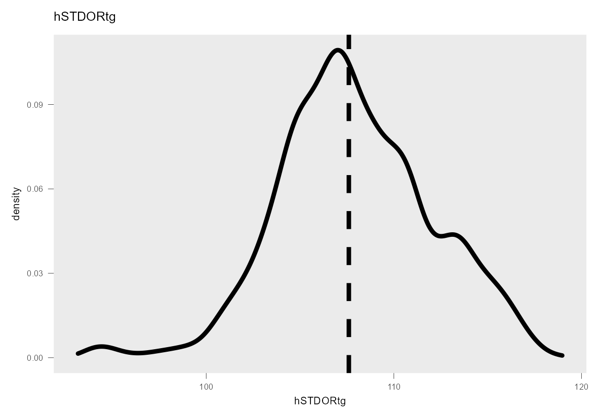
Smoothed stat v Win %
plot_smooth <- ggplot(allgames_df3,aes(x=get(paste(colnames(allgames_df3)[5])),y=game_outcome),guide=FALSE) +
geom_smooth(method="loess",formula=y~x,
alpha=.2,size=1.5,color='#0066FF',fill='#0066FF') +
geom_point(position=position_jitter(height=.015,width=0), alpha=.1,color='#0066FF', size=.3) +
scale_x_continuous(expand=c(0,0)) +
ylim(-.05,1.05) +
theme(panel.border = element_blank(),
panel.grid.major = element_blank(),
panel.grid.minor = element_blank(),
text = element_text(size = 5),
axis.ticks.x = element_line(size=.1),
axis.ticks.y = element_line(size=.1)) +
labs(x=paste0(colnames(allgames_df3)[5]), y='Win %') +
ggtitle(paste0(colnames(allgames_df3)[5]))
ggsave(plot_smooth, filename=paste0("ts_", paste0(colnames(allgames_df3)[5]),"_smooth.png"),
path = '~\\R\\bookdown-demo-main\\bookdown-demo-main\\images',
width = 10, height = 7, units = "cm")library(knitr)
knitr::include_graphics('~\\R\\bookdown-demo-main\\bookdown-demo-main\\images\\ts_hSTDORtg_smooth.png')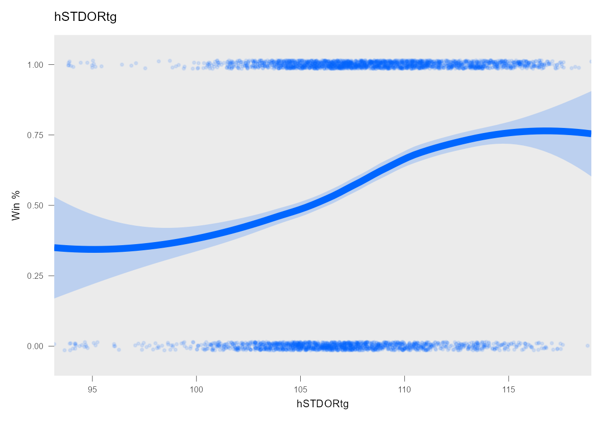
Loops for making all the distribution and smoothing graphs
Distribution loop:
#distribution
for (i in 2:21){
lowq <- unname(quantile(allgames_df3[,i], prob = 0.025))
highq <- unname(quantile(allgames_df3[,i], prob = .975))
plot_dist <- ggplot(allgames_df3,aes(x=get(paste(colnames(allgames_df3)[i])))) +
geom_vline(aes(xintercept=median(get(paste(colnames(allgames_df3)[i])))), linetype = 'dashed',size=.5) +
geom_density(aes(x=get(paste(colnames(allgames_df3)[i]))),size=1) +
theme(panel.border = element_blank(),
panel.grid.major = element_blank(),
panel.grid.minor = element_blank(),
text = element_text(size = 5),
axis.ticks.x = element_line(size=.1),
axis.ticks.y = element_line(size=.1)) +
#scale_x_continuous(limits=c(lowq,highq),expand=c(0,0)) +
labs(x=paste0(colnames(allgames_df3)[i]), y='density') +
ggtitle(paste0(colnames(allgames_df3)[i]))
ggsave(plot_dist, filename=paste0("ts_", paste0(colnames(allgames_df3)[i]),"_dist.png"),
path = '~\\R\\bookdown-demo-main\\bookdown-demo-main\\images',
width = 10, height = 7, units = "cm")
}Smoothing loop:
#smoothing
for (i in 2:21){
plot_smooth <- ggplot(allgames_df3,aes(x=get(paste(colnames(allgames_df3)[i])),y=game_outcome),guide=FALSE) +
geom_smooth(method="loess",formula=y~x,
alpha=.2,size=1.5,color='#0066FF',fill='#0066FF') +
geom_point(position=position_jitter(height=.015,width=0), alpha=.1,color='#0066FF', size=.3) +
scale_x_continuous(expand=c(0,0)) +
ylim(-.05,1.05) +
theme(panel.border = element_blank(),
panel.grid.major = element_blank(),
panel.grid.minor = element_blank(),
text = element_text(size = 5),
axis.ticks.x = element_line(size=.1),
axis.ticks.y = element_line(size=.1)) +
labs(x=paste0(colnames(allgames_df3)[i]), y='Win %') +
ggtitle(paste0(colnames(allgames_df3)[i]))
ggsave(plot_smooth, filename=paste0("ts_", paste0(colnames(allgames_df3)[i]),"_smooth.png"),
path = '~\\R\\bookdown-demo-main\\bookdown-demo-main\\images',
width = 10, height = 7, units = "cm")
}fig1_path <- "~\\R\\bookdown-demo-main\\bookdown-demo-main\\images\\ts_h_w_prob_dist.png"
fig2_path <- "~\\R\\bookdown-demo-main\\bookdown-demo-main\\images\\ts_h_w_prob_smooth.png"
knitr::include_graphics(c(fig1_path, fig2_path))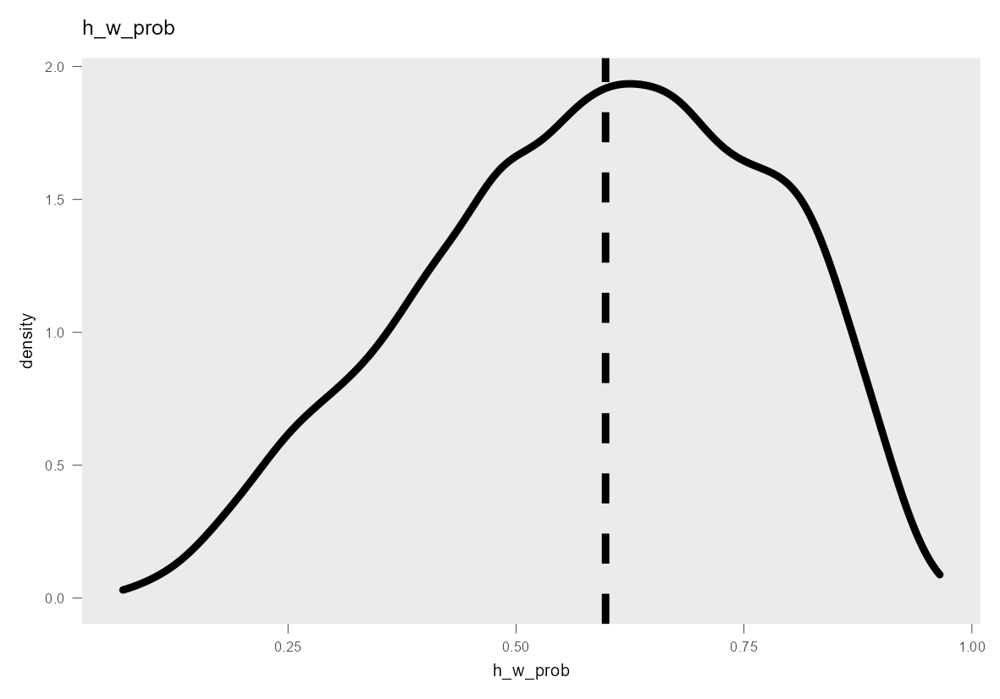
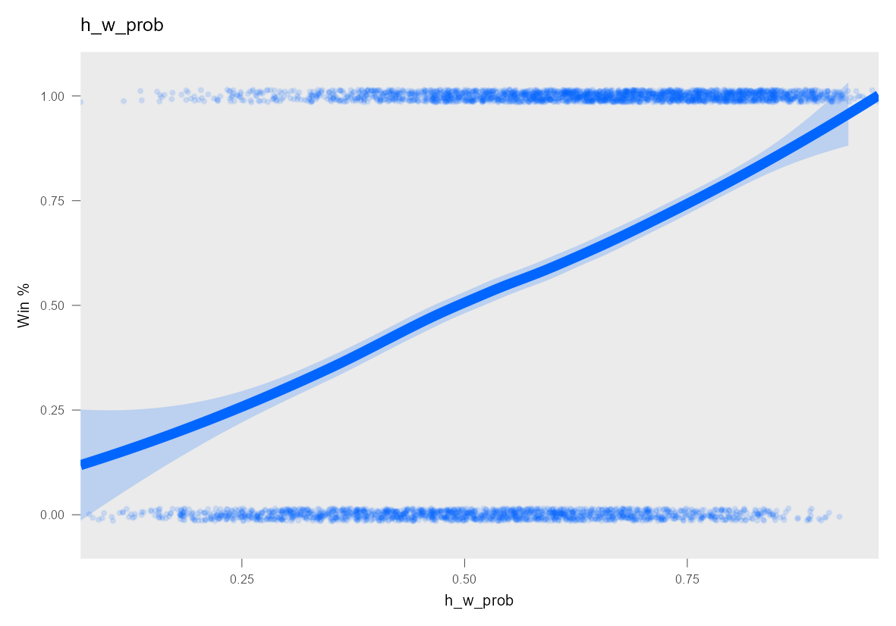
fig1_path <- "~\\R\\bookdown-demo-main\\bookdown-demo-main\\images\\ts_hSTDAST._dist.png"
fig2_path <- "~\\R\\bookdown-demo-main\\bookdown-demo-main\\images\\ts_hSTDAST._smooth.png"
knitr::include_graphics(c(fig1_path, fig2_path))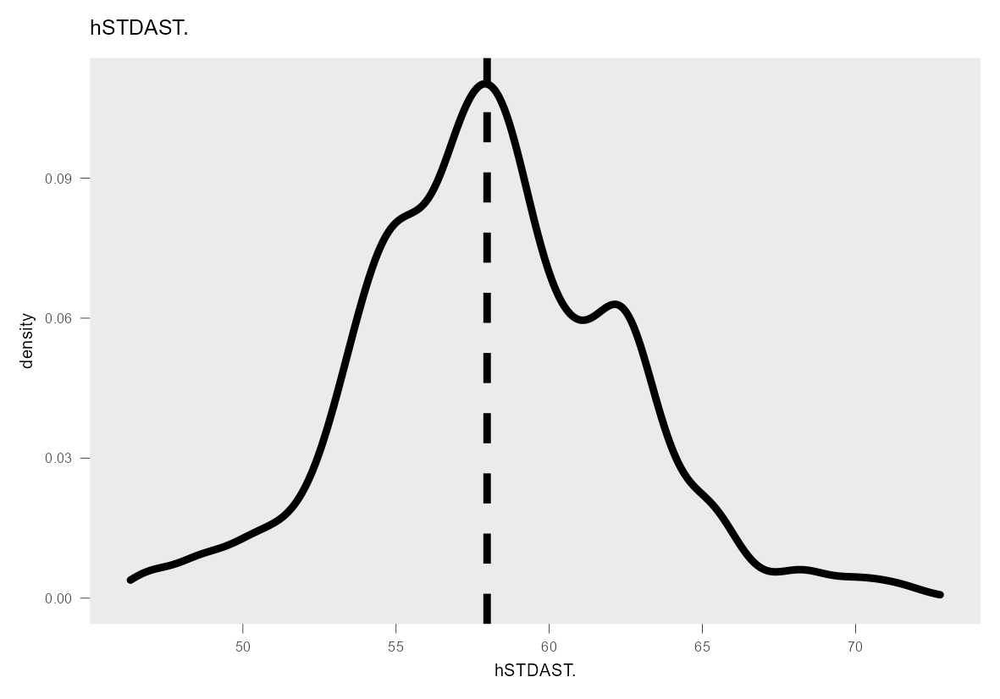
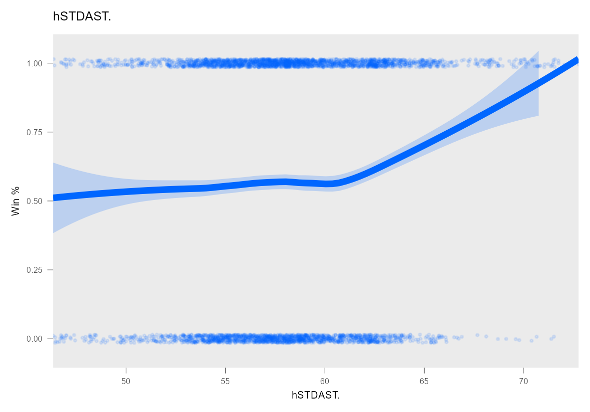
Need to figure out how to show all ~40 graphs here. Some observations: 1) The distributions look pretty normal, a few have long right tails (BLK%, FT/FGA, FTr, X3PAr). AST% is a perhaps interesting case, where there is a bump to the right of the median that perhaps is explanatory for the AST% w% graph. 2) There are a few broad categories of correlation graphs: a) h_w_prob; b) positively related: eFG%, ORtg, PTS, TS%; c) negatively related: DRtg, oeFG%, oPTS, d) no strong relationship: BLK%, DRB%, FT/FGA, FTr, ORB%, oTOV%, Pace, STL%, TOV%, TRB%, e) sudden shifts: AST%, X3PAr. 3) What explains the AST% graph? Probably an artifact of there being a few exceptionally good teams with high AST%. Alternatively, an elite AST% is particularly informative. Looks like the median is around 57.5 and the rise starts around 60.